Chapter 1. Overview of the installation environment
The Z NetView Enterprise Management Agent (NetView agent) provides information that you can use to
manage your network from the Tivoli Enterprise Portal using sampled and real-time data. The data
provides information about network resources and outages, using situations and expert advice, as well as
trends in your network through the use of historical data. You can issue NetView, VTAM, and z/OS
commands directly from the Tivoli Enterprise Portal to provide instant display and troubleshooting
capabilities. The NetView agent enables you to manage both availability and performance data from the
Tivoli Enterprise Portal using cross-product links to selected z/OS OMEGAMON XE agents.
This book describes the installation and configuration tasks required to install the NetView agent:
- Defining the runtime environment
- Configuring the Tivoli Enterprise Monitoring Server (monitoring server)
- Configuring the NetView agent
- Updating NetView initialization statements
- Installing and configuring the distributed components (Tivoli Enterprise Portal and Tivoli Enterprise Portal Server)
- Verifying the configuration
- Implementing security
- Configuring historical data collection
If this is the first time you are configuring the NetView agent, review the progression of tasks defined in
the IBM Tivoli OMEGAMON XE Monitoring Agents on z/OS: Quick Start Guide.
If you are upgrading from a previous version of the NetView agent, refer to the IBM Tivoli OMEGAMON XE
and Tivoli Management Services on z/OS: Upgrade Guide and IBM Z NetView Installation: Migration Guide.
For a list of the changes to the NetView agent for this release, see Appendix C, “Enterprise Management
Agent Changes,” on page 73.
Configuration Scenarios
The Tivoli Management Services environment requires that installation and configuration be performed on
both the managed systems (z/OS) and on the systems where some of the Tivoli Management Services
components run. The installation steps for these components can be performed simultaneously, but
some of the configuration steps require that specific components already be installed.
Figure 1 on page 2 shows a sample Tivoli Management Services environment.
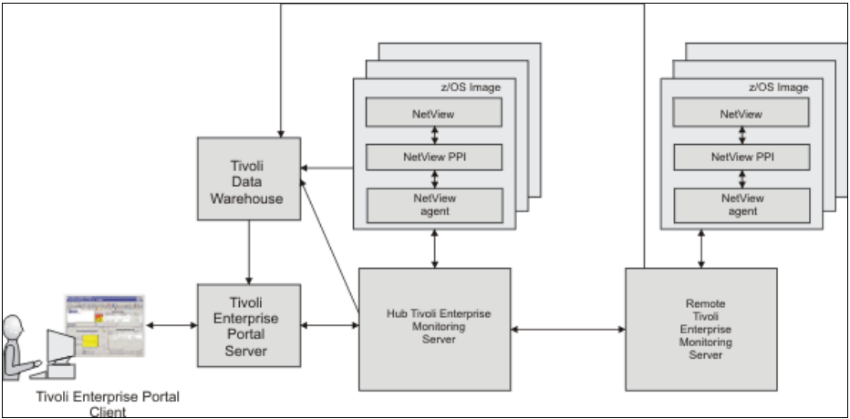
Figure 1. Sample Tivoli Management Services environment
As you work through this installation guide, complete one of the following installation scenarios:
- “Scenario 1: Creating a new runtime environment” on page 80
This scenario configures a hub monitoring server and the NetView agent running in the same z/OS system image. This scenario uses a full runtime environment.
- “Scenario 2: Updating the NetView agent in an existing RTE” on page 87
This scenario configures the NetView agent in an existing Tivoli Management Services environment. This scenario uses a full runtime environment.
For the installation scenarios in this book, make the following decisions:
-
If you are creating a new environment, decide on which z/OS image to deploy the hub monitoring server.
The scenarios are based on using a hub monitoring server running in a z/OS environment. Note that the hub monitoring server can run on any operating system supported by IBM Tivoli Monitoring 6.3. The steps for a non-z/OS environment are similar.
-
Decide where to deploy the Tivoli Enterprise Portal Server (portal server).
-
Decide which NetView domains you plan to manage using the NetView agent. An instance of the NetView agent is required on each z/OS image containing a NetView domain that you want to manage.
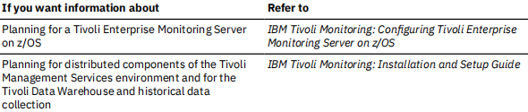
Installing the z/OS-based components using SMP/E
The System Modification Program Extended (SMP/E) tool is used to install and maintain software on z/OS
systems. For information on the supported levels of the SMP/E tool and other related installation
requirements, refer to the Program Directory for IBM Z NetView Enterprise Management Agent.
The Z NetView Enterprise Management Agent is a separate feature that has its own function modification
identifier (FMID). If you do not have IBM Tivoli Monitoring installed or want to set up a new environment,
see the Program Directory for IBM Tivoli Management Services on z/OS for the SMP/E installation
information. After installing Tivoli Monitoring Services, see IBM Tivoli OMEGAMON XE and Tivoli
Management Services on z/OS Common Planning and Configuration Guide.
Before starting the configuration procedures described in this book, perform the SMP/E installation of the
NetView product and optionally, Tivoli Management Services if not already installed. Also perform the
post-installation steps described in the NetView program directory, the Z NetView Enterprise
Management Agent program directory, and IBM Z NetView Installation: Getting Started.
Abbreviations used
Table 1 on page 3 includes abbreviations and their meaning.
| Table 1. Abbreviations |
| Abbreviation |
Meaning |
| &hilev |
High-level qualifier |
| &midlev |
The mid-level qualifier. Defaults to the runtime environment name. Used
in conjunction with the &rhilev and &rvhilev qualifiers. |
| &rhilev |
Runtime environment (RTE) high-level qualifier (non-VSAM) |
| &rte |
Name for the runtime environment that you are defining |
| &rvhilev |
Runtime high-level qualifier (VSAM) |
| &shilev |
High-level qualifier for the libraries (INST* libraries) |
| &thilev |
SMP/E maintained product target high-level qualifier |
PARMGEN configuration method
With the PARMGEN configuration method, you edit a comprehensive list of parameters that configure
Tivoli Management Services on z/OS components and the NetView agent. You then submit a series of jobs
to create a complete runtime environment using the parameter values that you specified. For more
information about the PARMGEN configuration method, see the OMEGAMON XE and Tivoli Management
Services on z/OS Common Planning and Configuration Guide. The parameter values specific to the
NetView agent are described in Appendix D, “NetView PARMGEN installation parameters,” on page 75.
Runtime environment (RTE)
A runtime environment (RTE) is a logical grouping of runtime libraries that are referenced by started tasks
that are running on a z/OS image. The PARMGEN tool is used to create and manage a runtime
environment. This runtime environment determines the number and types of runtime libraries that are
required. You must define a runtime environment on each z/OS image that is monitored by the NetView
agent.
Types of libraries created
Table 2 on page 4 summarizes the types of libraries that are created during installation and
configuration of the NetView agent.
| Table 2. Types of libraries |
| Type of Library |
Description |
| Runtime libraries |
General term for libraries referenced by started task procedures.
Includes SMP/E maintained product target, base, and z/OS image-specific libraries |
SMP/E maintained product target
libraries
Abbreviated thilev.
|
SMP/E maintained product target libraries |
Base libraries
Abbreviated &rhilev or &rhilev.&rte. |
Read-only runtime libraries that the configuration process does not
alter and that can be shared between systems. These libraries
physically exist in a Full or Base runtime environment, or as SMP/E
maintained product target libraries (if a runtime environment shares
with SMP/E).
The base libraries can contain the actual data sets maintained by
SMP/E, or a copy of them. Use a clone or copy of the SMP/E
installation libraries for a production environment. |
z/OS image-specific libraries
Abbreviated &rhilev.&rte.
|
Runtime libraries that are built during configuration to run on a
specific z/OS image. These libraries contain the unique elements
required for a particular z/OS image and cannot be shared among
z/OS images. They can be updated. |
You can optimize your product environment based on the library types. For example, by allocating
common base libraries to a single runtime environment that can be shared by other runtime
environments, you can substantially reduce the amount of disk space required, as well as simplify the
maintenance across remote z/OS images.
Types of runtime environments
Table 3 on page 4 explains the types of runtime environments that you can create during product
configuration. For more information about runtime environments, see the OMEGAMON XE and Tivoli
Management Services on z/OS Common Planning and Configuration Guide.
| Table 3. Types of runtime environments |
| Type of runtime environment |
Description |
Full (self-contained) runtime
environment |
Runtime environment containing a full set of dedicated libraries,
consisting of both z/OS image-specific libraries and a copy of the
SMP/E installation read-only base libraries eligible for sharing with
other runtime environments.
See Appendix E, “Configuring the NetView agent by using the
PARMGEN standard configuration method,” on page 79 for an
example. |
| Base runtime environment |
Runtime environment containing read-only libraries that are
independent of configuration. These libraries must be shared by
another runtime environment containing configuration information. |
| Sharing-with-base runtime environment |
Runtime environment containing z/OS image-specific libraries and
referencing the base libraries configured in a base runtime
environment. |
| Sharing-with-full runtime environment |
Runtime environment containing z/OS image-specific libraries and
referencing the base libraries configured in a full runtime
environment |
| Sharing-with-SMP/E runtime
environment |
Runtime environment containing z/OS image-specific libraries and
referencing the libraries managed by SMP/E |
Chapter 2. Configuring the NetView agent by using
the PARMGEN quick configuration method
The scenarios in this section use a full runtime environment named
CNM01. This environment contains all
the libraries that are required by the NetView agent. All base libraries and LPAR-specific libraries are
allocated within the
CNM01 runtime environment. The monitoring server can be on this image, or it can
exist on another system.
RTE Name: CNM01
Type: FULL
Hilev: NETVIEW.V621RTE
Midlev: CNM01
Shares with: (none)
This type of runtime environment is illustrated in
Figure 2 on page 7.
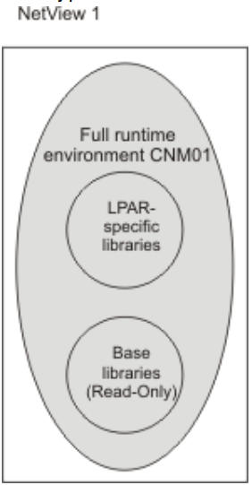
Figure 2. Full runtime environment on a single system
Figure 3 on page 8 shows the way that a full runtime environment can be expanded to more than one
z/OS image. Each runtime environment is self-contained; the three runtime environments CNM01,
CNM02, and CNM03 on systems NetView1, NetView2, and NetView3 do not share any libraries. The
monitoring server can be on one of these images or it can run on an external system.
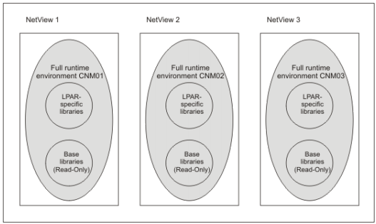
Figure 3. Full runtime environments on several systems
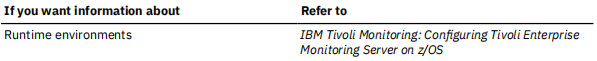
The following scenarios contain procedures that you can follow to configure the NetView agent by using
the PARMGEN quick configuration method.
- “Scenario 1: Creating a new runtime environment” on page 8
- “Scenario 2: Converting an existing Configuration Tool RTE to PARMGEN and Updating it” on page 17
Scenario 1: Creating a new runtime environment
About this task
If you don't have any existing full runtime environment (RTE), you can use the PARMGEN Configuration
tool to create a new runtime environment. Follow these steps to create a new RTE and configure the
NetView agent.
Procedure
- Start the PARMGEN tool.
- Use the KCIJPCFG job to set up PARMGEN work environment for an RTE.
- Customize PARMGEN configuration profiles.
- Create the RTE members and jobs.
- Submit batch jobs to complete the PARMGEN setup.
Starting the PARMGEN tool
About this task
Follow these steps to start the PARMGEN tool:
- Log on to a TSO session.
- Enter ISPF.
- From the Primary Option Menu, enter Option 6 (Command).
- If you are using a 3270 Model 2 (24 x 80) display, turn off the predefined function (PF) keys so that the function keys are not truncated. To do this, enter PFSHOW on the command line and repeat this command until the ISPF default function keys are no longer displayed.
- From the command line, enter the following command:
EX ’&shilev.TKANCUS’
where &shilev is the high-level qualifier that you specified when you installed Tivoli Management
Services.
A panel similar to the following one is displayed:
KCIPQPGW
Welcome to the z/OS Installation and Configuration Tools for
z Systems Management Suites
-
Checklist: System preparation checklists
Tip: Read/Print Checklists prior to installation and configuration.
-
Installation Workflow:
SMP/E-install z/OS products with Install Job Generator (JOBGEN)
Conditional: JOBGEN is not required when using SystemPac or ServerPac.
-
Configuration Workflow (Post-installation):
Configure z/OS products with Parameter Generator Workflow (PARMGEN)
- What's New in PARMGEN? <=== Revised
Maintenance Level: HKCI310 PTF UA91952 (APAR OA51755 2Q17 Interim Feature)
©Copyright IBM Corporation 1992-2019
Licensed Material - Program Property of
IBM
Option ===>
| F1=HELP |
F2=SPLIT |
F3=END |
F4=RETURN |
F5=RFIND |
F6=RCHANGE |
| F7=UP |
F8=DOWN |
F9=SWAP |
F10=LEFT |
F11=RIGHT |
F12=RETRIEVE |
- Review the checklists by selecting Option 1.
- You can skip Option 2 if you have already completed this step when you installed Tivoli Management Services.
- For the Quick configuration, from the z/OS Installation and Configuration Tools panel, select Option 3 to display the Parameter Generator (PARMGEN) Workflow panel. A panel similar to the following is displayed.
KCIPQPGA -------- PARAMETER GENERATOR (PARMGEN) WORKFLOW MENU -----------------
Command ===>
Quick Configuration Mode
Enter parameter values appropriate for the LPAR runtime environment (RTE).
GBL_USER_JCL:
|
NETVIEW.V621RTE.JCL________________________
(for example, TDSF72.ITM63.DS630.SYSPLEX.PARMGEN.JCL)
Specify the dataset name of the PARMGEN common/global
library for the different LPAR runtime environments (RTEs).
Use the same dataset for managing the different LPAR RTEs.
Multiple users can specify the same dataset to manage RTEs. |
RTE_PLIB_HILEV:
|
NETVIEW.V621RTE_______________
Specify the High-Level Qualifier (&hlq) portion of the
PARMGEN interim staging and work libraries for this LPAR RTE:
- &hlq.&rte_name.IK* (IKANCMDU,IKANPARU,IKANSAMU)
- &hlq.&rte_name.WK* (WKANCMDU,WKANPARU,WKANSAMU)
- &hlq.&rte_name.WCONFIG |
RTE_NAME:
|
CNM01_ (Type ? for a list of configured RTEs)
Specify the runtime environment (&rte_name) for this LPAR. |
Press F1=Help for more information. Type U or UTIL to access utility menu.
| F1=HELP |
F2=SPLIT |
F3=END |
F4=RETURN |
F5=RFIND |
F6=RCHANGE |
| F7=UP |
F8=DOWN |
F9=SWAP |
F10=LEFT |
F11=RIGHT |
F12=RETRIEVE |
Note: PARMGEN has two types of installation modes: Quick configuration and Standard configuration.
This scenario documents the Quick configuration, which is the recommended method. For more
information about the Standard configuration method, see Appendix Configuring the NetView agent by
using the PARMGEN standard configuration method and the OMEGAMON shared publications.
- Enter the following parameter values for your environment:
GBL_USER_JCL
The name of a JCL library to be created for PARMGEN jobs, for example, NETVIEW.V621RTE.JCL.
RTE_PLIB_HILEV
The high-level qualifier for PARMGEN work libraries, for example, NETVIEW.V621RTE.
RTE_NAME
The name of the runtime environment to be created, for example, CNM01.
Press Enter after you fill in the parameter values. If the GBL_USER_JCL library that you specified on
the Parameter Generator (PARMGEN) Workflow panel does not exist, a message is displayed. Press
Enter to allocate the JCL library and proceed to the main options panel for PARMGEN:
KCIPQPGB PARAMETER GENERATOR (PARMGEN) WORKFLOW - PRIMARY OPTION MENU --------
Option ===>
Quick Configuration Mode
GBL_USER_JCL: NETVIEW.V621RTE.JCL
RTE_PLIB_HILEV: NETVIEW.V621RTE
RTE_NAME: CNM01
Notes:
|
Perform steps 1 through 5 in sequence, repeating steps as necessary.
If reconfiguring this RTE, see Maintenance Scenarios F1=Help topic.
Enter n (1-5) to perform tasks.
Enter ns (1s-5s) for detailed job/task status. |
| |
Description |
Job/Label |
Status |
Date |
| |
-------------------------------------------- |
--------- |
--------- |
---------- |
| 1. |
Set up/Refresh PARMGEN work environment. |
KCIJPCFG |
RC= 00000 |
2017/02/22 |
| 2. |
Customize PARMGEN configuration profiles. |
CNM01 |
Edited |
2015/02/27 |
| 3. |
Create this RTE's runtime members and jobs. |
$PARSE |
Enter 3 |
for details. |
| 4. |
Submit batch jobs to complete PARMGEN setup. |
SUBMIT |
Enter 4 |
for details. |
| 5. |
Perform post configuration steps. |
POSTCFG |
| R |
Create next RTE - Reset fields. |
New RTE |
Press F1=Help for more information. Type U or UTIL to access utility
menu.
| F1=HELP |
F2=SPLIT |
F3=END |
F4=RETURN |
F5=RFIND |
F6=RCHANGE |
| F7=UP |
F8=DOWN |
F9=SWAP |
F10=LEFT |
F11=RIGHT |
F12=RETRIEVE |
Option 1. KCIJPCFG Setting up PARMGEN work environment for an RTE
About this task
To use the KCIJPCFG job to set up PARMGEN work environment for an RTE, complete the following
steps:
Procedure
- From the Parameter Generator (PARMGEN) Workflow panel, select Option 1 to display the Set Up
PARMGEN Work Environment panel (1 of 3).
KCIPQPG1 SET UP/REFRESH PARMGEN WORK ENVIRONMENT FOR AN RTE (1 OF 3) ---------
Quick Configuration Mode
Specify the RTE model profile to use:
==> ?__________________________
- To create a new RTE based on a predefined IBM model, type a ? in
the field and press Enter, then select the appropriate template.
- To create a new RTE that is a clone of an existing PARMGEN RTE,
specify the WCONFIG profile library and RTE member name to clone;
for example: (&hlq.&rte.WCONFIG(&clone_from))
- To create a new RTE that is a clone of an ICAT-created RTE,
specify the ICAT RTE Batch member location and RTE member;
for example: (&hlq.ICAT.INSTJOBS(CNM01))
- To create a new RTE from scratch, leave this field blank.
- To reconfigure or upgrade this existing PARMGEN RTE, specify its values;
for example: (NETVIEW.V621RTE.CNM01.WCONFIG(CNM01))
Customize jobcard data:
==> //USER1A JOB NOTIFY=&SYSUID,____________________________________________
==> // CLASS=A,MSGCLASS=A,MSGLEVEL=(1,1)__________________________
==> //*______________________________________________________________________
==> //*______________________________________________________________________
Specify the Install Job Generator (JOBGEN) output library if you want
PARMGEN to reuse CALLLIBS parameters from the JOBGEN repository:
==> ____________________________________________
(Type ? for last referenced JOBGEN library discovered, if any.)
Press F1=Help for more information. Type U or UTIL to access utility
menu.
Command ===>
| F1=HELP |
F2=SPLIT |
F3=END |
F4=RETURN |
F5=RFIND |
F6=RCHANGE |
| F7=UP |
F8=DOWN |
F9=SWAP |
F10=LEFT |
F11=RIGHT |
F12=RETRIEVE |
- Enter a ? in the first input field, and update the job statement to be used for PARMGEN jobs, because
the scenario creates a new runtime environment.
For example, use the following code:
//USER1A JOB MSGLEVEL=1,MSGCLASS=A,NOTIFY=USER1
- Press Enter to go to the resulting panel.
- On the resulting panel, select @MDLHF Full RTE w/ Static Hub TEMS/Agents as the
template to use, and press Enter to return to panel 1 of 3:
KCIPQMDL ----------------- SELECT RTE MODEL FROM LIST ------ Row 1 to 22 of 22
Command ===>
Scroll ===> PAGE
Following is a list of predefined LPAR RTE model profiles available in
NETVIEW.V6R3M0.TKANSAM SMP/E target library.
Select ("S" or "/") an IBM RTE model to use to create the new CNM01 RTE.
Legend:
- $MDL* models: Recommended best-practice models for new RTE deployments.
- @MDL* models: Additional RTE models for new RTE deployments.
Note: For existing RTEs that want to use $MDLVARS model, use KCIJPMCF job
from the Utilities menu.
| Model |
Description |
Scenario |
| -------- |
------------------------------------------------ |
-------- |
| _ $MDLHA |
Full RTE w/ High Availability Hub TEMS |
QCF01 |
| _$MDLHFV |
Full RTE w/ Static Hub TEMS/Agents w/ variables |
QCF02 |
| s$MDLRSBV |
Sharing-w/-Base RTE w/ Remote/Agents w/ vars. |
QCF03 |
| _@MDLHF |
Full RTE w/ Static Hub TEMS/Agents |
QCF04 |
| _@MDLRF |
Full RTE w/ Remote TEMS/Agents |
QCF05 |
| _@MDLRFV |
Full RTE w/ Remote TEMS/Agents w/ variables |
QCF06 |
| _@MDLRSB |
Sharing-w/-Base RTE w/ Remote TEMS/Agents |
QCF07 |
| _@MDLRSS |
Sharing-w/-SMP RTE w/ Remote TEMS/Agents |
QCF08 |
| _@MDLRSSV |
Sharing-w/-SMP RTE w/ Remote/Agents w/ vars. |
QCF09 |
| _@MDLHSS |
Sharing-w/-SMP RTE w/ Static Hub TEMS/Agents |
QCF10 |
| _@MDLHSB |
Sharing-w/-Base RTE w/ Hub TEMS/Agents |
QCF12 |
| _$MDLAFV |
Full RTE w/ Agents only-no local TEMS w/ vars. |
QCF13 |
| _@MDLAF |
Full RTE w/ Agents only-no local TEMS |
QCF14 |
| _$MDLASBV |
Sharing-w/-Base RTE Agents-no local TEMS w/vars. |
QCF15 |
| _@MDLASB |
Sharing-w/-Base RTE w/ Agents only-no local TEMS |
QCF16 |
| _@MDLASSV |
Sharing-w/-SMP RTE Agents only-no local TEMS var |
QCF17 |
| _@MDLASS |
Sharing-w/-SMP RTE w/ Agents only-no local TEMS |
QCF18 |
| _$MDLHSSV |
Sharing-w/-SMP RTE w/ Hub/TOM/KJJ Agent w/ vars. |
QCF19 |
| _$MDLHSS |
Sharing-w/-SMP RTE w/ Hub/TOM/KJJ Agent only |
QCF20 |
| _$MDLHSBV |
Sharing-w/-Base RTE w/ Hub TEMS/Agents w/ vars. |
QCF21 |
| _@MDLHSSV |
Sharing-w/-SMP RTE w/ Hub TEMS/Agents w/ vars. |
QCF22 |
| _$MDLVARS |
Best-practice variables for RTE parameters |
QHOWTO_05 |
End of
data
| F1=HELP |
F2=SPLIT |
F3=END |
F4=RETURN |
F5=RFIND |
F6=RCHANGE |
| F7=UP |
F8=DOWN |
F9=SWAP |
F10=LEFT |
F11=RIGHT |
F12=RETRIEVE |
- Press Enter to go to panel 2 of 3 for setting up the work environment:
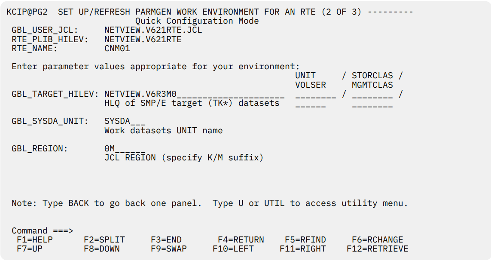
- From the Set Up PARMGEN Work Environment panel (2 of 3), specify a value for the following fields,
and press Enter:
GBL_TARGET_HILEV
The high-level qualifier for your SMP/E target libraries, for example, NETVIEW.V6R3M0.
GBL_SYSDA_UNIT
The disk unit name for non-VSAM data sets, for example, SYSDA.
GBL_REGION
Region size that the generated jobs will use.
- From the Set Up PARMGEN Work Environment panel (3 of 3), enter any values that are required by your installation for creating new data sets. Press Enter.
- The Display PARMGEN Environment Analysis panel lists the components that are installed in your TKANCUS data set. Press Enter to display the Include Products in the PARMGEN Customization panel.
- To include any products in the PARMGEN customization panel, enter / or S to the left of the product code.
By default, all products are preselected for customization. When you finish, specify Y in the confirm field, and press Enter.
- Review and submit the KCIJPCFG job. Verify that the job ends with a 0 return code. If the job does not end with a 0 return code, correct the job and resubmit it.
- Press F3 to display messages for the submitted job.
- Press Enter to return to the Parameter Generator (PARMGEN) Workflow panel.
Note the status and date on the right of the step that you just completed.
Option 2. Customizing PARMGEN configuration profiles
About this task
To edit PARMGEN configuration profiles, complete the following steps:
Procedure
- From the Parameter Generator (PARMGEN) Workflow panel, select Option 2 to customize configuration profiles. Use this option to override or specify values for the NetView agent configuration files.
Most of the IBM Tivoli Monitoring and NetView agent parameters are set in the RTE LPAR profile. Use the global parameters selection to specify the location of key libraries on your system.
Use a TSO editor to customize the files. Some optional values are commented out. If you modify any of these values, ensure that you also uncomment the statements.
- Select Option 1 to customize the RTE LPAR profile.
- The CONFIGURE_PRODUCTS section shows the products that are included or excluded. Review the default settings and update them as necessary for your installation. Parameters beginning with KDS are for the monitoring server. The NetView agent uses parameters beginning with KNA.
Ensure that you review and update the following parameters:
Type of monitoring server (hub):
This parameter is controlled by the KDS_TEMS_TYPE parameter. This parameter is set to HUB. For the NetView agent to connect to the monitoring server, ensure that the KNA_TEMS_LOCAL_CONNECT_FLAG parameter is set to Y and that the KNA_TEMS_TCP_HOST parameter is correct.
Communications-related information, for example TCP addresses:
Use a fully-qualified host name or TCPIP address. The addresses are assigned default values. Verify that the following monitoring server parameters are correct:
- RTE_TCP_HOST
- RTE_TCP_PORT_NUM
- RTE_TCP_STC
Verify that the following NetView agent parameters are correct:
- KNA_AGT_TCP_HOST
- KNA_TCP_STC
Verify that the following parameters that control the communications protocols used by the monitoring server and the NetView agent are correct:
- KDS_TEMS_COMM_PROTOCOLn, where n is a value 1-7.
- KDS_AGT_COMM_PROTOCOLn, where n is a value 1-7.
- KDS_TEMS_TCP_xxxxx_PORT_NUM, where xxxxx corresponds to the communications protocol (PIPE,UDP,PIPE6,UDP6,PIPES,PIPE6S).
Ensure that the KDS_TEMS_KLX_TCP_TOLERATERECYCLE parameter and KNA_AGT_KLX_TCP_TOLERATERECYCLE parameter are set to Y. This configuration enables the monitoring server and the NetView agent to reconnect to its TCP/IP stack without being recycled after the TCP/IP stack is recycled.
PPI sender and receiver names
The KNA_PPISND_PPI_SENDER_CNMEMATX and KNAA_PPIRCV_PPI_RECEIVER_CNMEMARX
parameters control the PPI sender and receiver names that are used by the NetView agent. The
sender name is controlled by the KNA_PPISND_PPI_SENDER_CNMEMATX parameter. The default
name is CNMEMATX. There is no matching CNMSTYLE statement. The receiver name is controlled
by the KNA_PPIRCV_PPI_RECEIVER_CNMEMARX parameter. This name must match the DESTPPI
receiver name that is specified in the CNMSTYLE member or its include member. The default value
is CNMEMARX.
Security settings to enable encryption for the monitoring server
Security settings to enable Take Action command forwarding
System commands that are issued from the Tivoli Enterprise Portal by using Take Action
commands or situations run without command authorization or an audit trail. You can use the
NetView product to perform command authorization for these system commands and to provide
an audit trail. Command authorization for the Take Action system commands uses the portal user
ID, which is sent to the NetView program with the command. The portal user ID that is sent is used
to determine the user ID that issues the command. When a command is sent from a situation, the
user ID that is sent is the last one that edited the situation. Password validation is not performed.
If a NetView operator ID exists that matches the portal user ID and has the required command
authorization, the command is run on the existing NetView operator ID. For more information
about protecting MVS system commands, see the IBM Tivoli Z NetView Security Reference. Some
agents provide their own Take Action commands, known as agent commands. Agent commands
have an associated two-character prefix for their product code. These commands are not sent to
the NetView program for command authorization. The only agent commands that are sent to the
NetView program for authorization are the NetView agent commands prefixed with NA. For
information about creating or editing a Take Action command, see the IBM Tivoli Monitoring: Tivoli
Enterprise Portal User's Guide. You can display Take Action commands and command responses in
the NetView Command Response workspace. Additionally, you can display the BNH806I and
BNH807I audit trail messages in the NetView Audit Log workspace.
Use the following parameters to enable command authorization checking for system commands sent
from the hub monitoring server:
KDS_PPI_RECEIVER
Specifies the name of the NetView PPI Receiver. The value must match the PPI receiver name
specified on the NetView APSERV command. The default value is CNMPCMDR
KDS_PPI_SENDER
Specifies a value for the PPI sender. If you do not specify a value, the job name of the monitoring
server is used when the command is written to the NetView log. Equivalent parameters are
available to enable command authorization checking for commands sent from the NetView agent.
KNA_AGT_KGLHC_PPI_RECEIVER
Specifies the name of the NetView PPI Receiver. The value must match the PPI receiver name
specified on the NetView APSERV command. The default value is CNMPCMDR.
KNA_AGT_KGLHC_PPI_SENDER
Specifies a value for the PPI sender.
- For definitions for the common parameters, see the IBM OMEGAMON and Tivoli Management
Services on z/OS shared documentation.
- For NetView agent definitions, see Appendix C, Enterprise Management Agent Changes.
- For information about configuring security settings for a monitoring server running in a z/OS
environment, see IBM OMEGAMON and Tivoli Management Services on z/OS shared
documentation.
- Press F3 to return to the menu panel.
- . Select Option 2 to review and specify global parameters. Review the default settings and update them
as necessary for your installation
Usage notes:
- The global parameters define system data sets that include started task procedures, load modules,
and configuration files. In many cases, the default high-level qualifier for the data set is SYS1.
Review the global parameters starting with the GLBL_DSN_SYS1 parameter and verify that the
correct data sets are defined.
- The GBL_DSN_NETVIEW_CNMLINK parameter specifies the name of the NetView CNMLINK data set.
The default is set to NETVIEW.VNRNMN.CNMLINK. You must change the
GBL_DSN_NETVIEW_CNMLINK parameter. Update the parameter to the correct name of the NetView
CNMLINK data set.
- Press F3 to return to the menu panel.
- Select Option 4 (WCONFIG). Locate the KNA$PENV member and edit it. Verify that it contains the
following statements:
CTIRA_RECONNECT_WAIT = 60
CTIRA_HEARTBEAT = 1
For more information about the CTIRA_ environment variables, see the IBM Tivoli Monitoring:
Installation and Setup Guide.
- Press F3 again to return to the Parameter Generator (PARMGEN) Workflow panel.
Option 3. Creating the RTE members and jobs
About this task
To create the RTE member and jobs, complete the following steps:
Procedure
- From the Parameter Generator (PARMGEN) Workflow panel, select Option 3 to create the RTE members and jobs. Prior to creating the runtime environment, the PARMGEN tool stores the specified configuration in a set of members in a working library. These members are used to create the configuration files in the runtime environment.
- Select Option 1 to edit the composite $PARSE job.
- Review and submit the KCIJPPRS job. Verify that the job ends with a 0 return code. If the job does not end with a 0 return code, correct the job and resubmit it.
- Press F3 to display messages for the submitted job.
- Press Enter to return to the menu panel.
- . Press F3 to return to the Parameter Generator (PARMGEN) Workflow panel.
Option 4. Submitting batch jobs to complete the PARMGEN setup
About this task
To complete the PARMGEN setup, you need to submit the batch jobs by performing the following steps:
Procedure
- From the Parameter Generator (PARMGEN) Workflow panel, select Option 4 to submit batch jobs to
complete the PARMGEN setup.
The Submit Batch Jobs To Complete PARMGEN Setup panel (KCIP@SUB) is displayed.
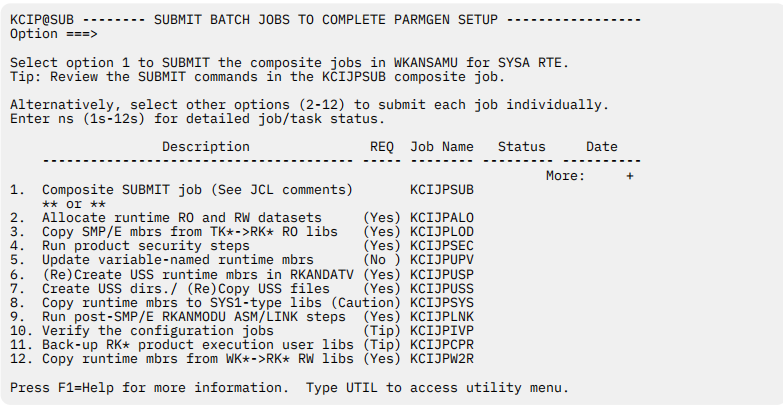
- Choose one of the following approaches to submit jobs:
- To submit some or all of the jobs needed for configuration in one step, select Option 1 to edit the
KCIJPSUB composite master submit job.
- To submit jobs separately, select other options 2-12 to submit each job individually based on your
requirements.
-
Review and verify the jobs.
- If you are using the composite master job, ensure all the jobs you want to submit this way are selected. The jobs that will be submitted are listed under directory
./ ADD NAME=SUBLIST in the KCIJPSUB job. The jobs that are commented out are not submitted. By default, the KCIJVSYS job and the KCIJPIVP job are not selected.
- Verify whether the jobs end with the right return code. Verify that the jobs end with a 0 return code. If the KCIJPIVP job is selected, it might end with a 4 return code, because the composite master job did not run all the jobs.
- If a job does not end with the expected return code, correct the individual job and resubmit it.
- Press F3 to display messages for the submitted job.
-
To submit additional jobs, choose one of the following steps to complete based on your situation:
- If you use the composite job, submit any additional jobs that were not selected in the KCIJPSUB job.
- If you don't use the composite job, submit any needed individual jobs from the Submit Batch Jobs
To Complete PARMGEN Setup panel.
For example, complete the following steps to submit the KCIJPUSS, KCIJPSYS, KCIJPIVP, and
KCIJPW2R jobs separately.
- Select Option 7 to edit the USS system setup job.
- Review and submit the KCIJPUSS job. Verify that the job ends with a 0 return code. If the job does not end with a 0 return code, correct the job and resubmit it.
- Press F3to display messages for the submitted job.
- Press Enter to return to the menu panel.
- Select Option 8 to edit the system setup job.
- Review and submit the KCIJPSYS job. Verify that the job ends with a 0 return code. If the job does not end with a 0 return code, correct the job and resubmit it.
- Press F3 to display messages for the submitted job.
- Press Enter to return to the menu panel.
- Select Option 10 to edit the configuration verification job.
- Review and submit the KCIJPIVP job. Verify that the job ends with a 0 or 4 return code. If the job does not end with a 0 or 4 return code, correct the job and resubmit it. If the job ends with a 4 return code, examine the job output for the reason.
- Press F3 to display messages for the submitted job.
- Press Enter to return to the menu panel.
- Select Option 12 to edit the WK* to RK* deployment job.
- Review and submit the KCIJPW2R job. Verify that the job ends with a 0 or 4 return code. If the job does not end with a 0 or 4 return code, correct the job and resubmit it. If the job ends with a 4 return code, examine the job output for the reason.
- Press F3 to display messages for the submitted job.
- Press Enter to return to the menu panel.
- Press F3 to return to the Parameter Generator (PARMGEN) Workflow panel.
- Press F3 twice to exit the PARMGEN tool.
What to do next
When you complete the procedure in this section, continue with Chapter 3, “Completing the NetView
agent configuration,” on page 27.
Scenario 2: Converting an existing Configuration Tool RTE to PARMGEN and
Updating it
About this task
In this scenario, a full runtime environment (RTE) already exists, which was created by using the
deprecated configuration tool. The existing environment has a hub Tivoli Enterprise Monitoring Server on
a different host and a working Tivoli Enterprise Portal Server. This RTE contains a remote Tivoli Enterprise
Monitoring Server into which the NetView agent connects.
Follow these steps to copy RTE parameters and configure a NetView agent into a new PARMGEN RTE
based on the existing RTE.
Procedure
- Create the batch parameter deck by using the configuration tool.
- Start the PARMGEN tool.
- Use the KCIJPCFG job to set up PARMGEN work environment for an RTE.
- Customize PARMGEN configuration profiles.
- Create the RTE members and jobs.
- Submit batch jobs to complete the PARMGEN setup.
Creating the batch parameter deck by using the configuration tool
About this task
Follow these steps to use the configuration tool to create a batch parameter deck that you will use to
configure the NetView agent.
Procedure
- Log on to a TSO session.
- Enter ISPF.
- From the Primary Option Menu, enter Option 6 (Command).
- Start the configuration tool. For example, from the command line enter the following command:
where &shilev is the high-level qualifier that you specified when you created the INSTLIB data set. The configuration tool Main Menu ID displayed.
- From the configuration tool Main Menu, enter 3. The Configure Products panel is displayed.
- Enter 1 to display the Product Selection menu.
- Enter S to select the NetView agent.
- Enter Z to select the RTE to be used as the source of the batch parameter deck.
- Enter 1 to display the Create/Clone Parameter Deck panel.
- Enter 1 to display the Create Batch Mode Parameters panel.
- From the Create Batch Mode Parameters panel, specify a value for the following fields and then press Enter:
Parameter Library:
The data set where the parameter deck will be located.
Member Name:
The member name into which the parameter deck is written.
Starting the PARMGEN tool
About this task
Follow these steps to start the PARMGEN tool:
Procedure
- Log on to a TSO session.
- Enter ISPF.
- From the Primary Option Menu, enter Option 6 (Command).
- If you are using a 3270 Model 2 (24 x 80) display, turn off the predefined function (PF) keys so that the function keys are not truncated. To do this, enter PFSHOW on the command line and repeat this command until the ISPF default function keys are no longer displayed.
- From the command line, enter the following command:
EX ’&shilev.TKANCUS’
where &shilev is the high-level qualifier that you specified when you installed Tivoli Management
Services.
A panel similar to the following one is displayed:
KCIPQPGW
Welcome to the z/OS Installation and Configuration Tools for
z Systems Management Suites
- Checklist: System preparation checklists
Tip: Read/Print Checklists prior to installation and configuration.
- Installation Workflow:
SMP/E-install z/OS products with Install Job Generator (JOBGEN)
Conditional: JOBGEN is not required when using SystemPac or ServerPac.
- Configuration Workflow (Post-installation):
Configure z/OS products with Parameter Generator Workflow (PARMGEN)
- What's New in PARMGEN? <=== Revised
Maintenance Level: HKCI310 PTF UA91952 (APAR OA51755 2Q17 Interim Feature)
©Copyright IBM Corporation 1992-2019
Licensed Material - Program Property of
IBM
Option ===>
| F1=HELP |
F2=SPLIT |
F3=END |
F4=RETURN |
F5=RFIND |
F6=RCHANGE |
| F7=UP |
F8=DOWN |
F9=SWAP |
F10=LEFT |
F11=RIGHT |
F12=RETRIEVE |
- Review the checklists by selecting Option 1.
- You can skip Option 2 if you have already completed this step when you installed Tivoli Management Services.
- For the Quick configuration, from the z/OS Installation and Configuration Tools panel, select Option 3 to display the Parameter Generator (PARMGEN) Workflow panel. A panel similar to the following is displayed.
KCIPQPGA -------- PARAMETER GENERATOR (PARMGEN) WORKFLOW MENU -----------------
Command ===>
Quick Configuration Mode
Enter parameter values appropriate for the LPAR runtime environment (RTE).
GBL_USER_JCL:
|
NETVIEW.V621RTE.JCL________________________
(for example, TDSF72.ITM63.DS630.SYSPLEX.PARMGEN.JCL)
Specify the dataset name of the PARMGEN common/global
library for the different LPAR runtime environments (RTEs).
Use the same dataset for managing the different LPAR RTEs.
Multiple users can specify the same dataset to manage RTEs. |
RTE_PLIB_HILEV:
|
NETVIEW.V621RTE_______________
Specify the High-Level Qualifier (&hlq) portion of the
PARMGEN interim staging and work libraries for this LPAR RTE:
- &hlq.&rte_name.IK* (IKANCMDU,IKANPARU,IKANSAMU)
- &hlq.&rte_name.WK* (WKANCMDU,WKANPARU,WKANSAMU)
- &hlq.&rte_name.WCONFIG |
| RTE_NAME: |
CNM01_ (Type ? for a list of configured RTEs)
Specify the runtime environment (&rte_name) for this LPAR. |
Press F1=Help for more information. Type U or UTIL to access utility menu.
| F1=HELP |
F2=SPLIT |
F3=END |
F4=RETURN |
F5=RFIND |
F6=RCHANGE |
| F7=UP |
F8=DOWN |
F9=SWAP |
F10=LEFT |
F11=RIGHT |
F12=RETRIEVE |
- Enter the following parameter values for your environment:
GBL_USER_JCL
The name of a JCL library to be created for PARMGEN jobs, for example, NETVIEW.V621RTE.JCL.
RTE_PLIB_HILEV
The high-level qualifier for PARMGEN work libraries, for example, NETVIEW.V621RTE.
RTE_NAME
The name of the runtime environment to be created, for example, CNM01.
Press Enter after you fill in the parameter values. If the GBL_USER_JCL library that you specified on
the Parameter Generator (PARMGEN) Workflow panel does not exist, a message is displayed. Press
Enter to allocate the JCL library and proceed to the main options panel for PARMGEN:
KCIPQPGB PARAMETER GENERATOR (PARMGEN) WORKFLOW - PRIMARY OPTION MENU --------
Option ===>
Quick Configuration Mode
GBL_USER_JCL: NETVIEW.V621RTE.JCL
RTE_PLIB_HILEV: NETVIEW.V621RTE
RTE_NAME: CNM01
Notes:
|
Perform steps 1 through 5 in sequence, repeating steps as necessary.
If reconfiguring this RTE, see Maintenance Scenarios F1=Help topic.
Enter n (1-5) to perform tasks.
Enter ns (1s-5s) for detailed job/task status. |
| |
Description |
Job/Label |
Status |
Date |
| |
-------------------------------------------- |
--------- |
--------- |
---------- |
| 1. |
Set up/Refresh PARMGEN work environment. |
KCIJPCFG |
RC= 00000 |
2017/02/22 |
| 2. |
Customize PARMGEN configuration profiles. |
CNM01 |
Edited |
2015/02/27 |
| 3. |
Create this RTE's runtime members and jobs. |
$PARSE |
Enter 3 |
for details. |
| 4. |
Submit batch jobs to complete PARMGEN setup. |
SUBMIT |
Enter 4 |
for details. |
| 5. |
Perform post configuration steps. |
POSTCFG |
| R |
Create next RTE - Reset fields. |
New RTE |
Press F1=Help for more information. Type U or UTIL to access utility
menu.
| F1=HELP |
F2=SPLIT |
F3=END |
F4=RETURN |
F5=RFIND |
F6=RCHANGE |
| F7=UP |
F8=DOWN |
F9=SWAP |
F10=LEFT |
F11=RIGHT |
F12=RETRIEVE |
Option 1. KCIJPCFG Setting up PARMGEN work environment for an RTE
About this task
To use the KCIJPCFG job to set up PARMGEN work environment for an RTE, complete the following
steps:
Procedure
- From the Parameter Generator (PARMGEN) Workflow panel, select Option 1 to display the Set Up
PARMGEN Work Environment panel (1 of 3).
KCIPQPG1 SET UP/REFRESH PARMGEN WORK ENVIRONMENT FOR AN RTE (1 OF 3) ---------
Quick Configuration Mode
Specify the RTE model profile to use:
==> ?__________________________
- To create a new RTE based on a predefined IBM model, type a ? in
the field and press Enter, then select the appropriate template.
- To create a new RTE that is a clone of an existing PARMGEN RTE,
specify the WCONFIG profile library and RTE member name to clone;
for example: (&hlq.&rte.WCONFIG(&clone_from))
- To create a new RTE that is a clone of an ICAT-created RTE,
specify the ICAT RTE Batch member location and RTE member;
for example: (&hlq.ICAT.INSTJOBS(CNM01))
- To create a new RTE from scratch, leave this field blank.
- To reconfigure or upgrade this existing PARMGEN RTE, specify its values;
for example: (NETVIEW.V621RTE.CNM01.WCONFIG(CNM01))
Customize jobcard data:
==> //USER1A JOB NOTIFY=&SYSUID,____________________________________________
==> // CLASS=A,MSGCLASS=A,MSGLEVEL=(1,1)__________________________
==> //*______________________________________________________________________
==> //*______________________________________________________________________
Specify the Install Job Generator (JOBGEN) output library if you want
PARMGEN to reuse CALLLIBS parameters from the JOBGEN repository:
==> ____________________________________________
(Type ? for last referenced JOBGEN library discovered, if any.)
Press F1=Help for more information. Type U or UTIL to access utility
menu.
Command ===>
| F1=HELP |
F2=SPLIT |
F3=END |
F4=RETURN |
F5=RFIND |
F6=RCHANGE |
| F7=UP |
F8=DOWN |
F9=SWAP |
F10=LEFT |
F11=RIGHT |
F12=RETRIEVE |
- . From the Set Up PARMGEN Work Environment panel, enter the location of the batch parameter deck
and enter a job statement to be used for PARMGEN jobs.
For example, use the following code:
//USER1A JOB MSGLEVEL=1,MSGCLASS=A,NOTIFY=USER1
From the Set Up PARMGEN Work Environment panel (2 of 3), specify a value for the following fields,
and press Enter:
GBL_TARGET_HILEV
The high-level qualifier for your SMP/E target libraries, for example, NETVIEW.V6R3M0.
GBL_SYSDA_UNIT
The disk unit name for non-VSAM data sets, for example, SYSDA.
GBL_REGION
Region size that the generated jobs will use.
From the Set Up PARMGEN Work Environment panel (3 of 3), enter any values that are required by your installation for creating new data sets. Press Enter.
The Display PARMGEN Environment Analysis panel lists the components that are installed in your TKANCUS data set. Press Enter to display the Include Products in the PARMGEN Customization panel.
To include any products in the PARMGEN customization panel, enter / or S to the left of the product code.
By default, all products are preselected for customization. When you finish, specify Y in the confirm field, and press Enter.
Review and submit the KCIJPCFG job. Verify that the job ends with a 0 return code. If the job does not end with a 0 return code, correct the job and resubmit it.
Press F3 to display messages for the submitted job.
Press Enter to return to the Parameter Generator (PARMGEN) Workflow panel.
Note the status and date on the right of the step that you just completed.
Option 2. Customizing PARMGEN configuration profiles
About this task
To edit PARMGEN configuration profiles, complete the following steps:
Procedure
- From the Parameter Generator (PARMGEN) Workflow panel, select Option 2 to customize configuration profiles. Use this option to override or specify values for the NetView agent configuration files.
Most of the IBM Tivoli Monitoring and NetView agent parameters are set in the RTE LPAR profile. Use the global parameters selection to specify the location of key libraries on your system.
Use a TSO editor to customize the files. Some optional values are commented out. If you modify any of these values, ensure that you also uncomment the statements.
- Select Option 1 to customize the RTE LPAR profile.
- The CONFIGURE_PRODUCTS section shows the products that are included or excluded. Review the default settings and update them as necessary for your installation. Parameters beginning with KDS are for the monitoring server. The NetView agent uses parameters beginning with KNA.
Ensure that you review and update the following parameters:
Type of monitoring server (hub):
This parameter is controlled by the KDS_TEMS_TYPE parameter. This parameter is set to HUB. For the NetView agent to connect to the monitoring server, ensure that the KNA_TEMS_LOCAL_CONNECT_FLAG parameter is set to Y and that the KNA_TEMS_TCP_HOST parameter is correct.
Communications-related information, for example TCP addresses:
Use a fully-qualified host name or TCPIP address. The addresses are assigned default values. Verify that the following monitoring server parameters are correct:
- RTE_TCP_HOST
- RTE_TCP_PORT_NUM
- RTE_TCP_STC
Verify that the following NetView agent parameters are correct:
- KNA_AGT_TCP_HOST
- KNA_TCP_STC
Verify that the following parameters that control the communications protocols used by the monitoring server and the NetView agent are correct:
- KDS_TEMS_COMM_PROTOCOLn, where n is a value 1-7.
- KDS_AGT_COMM_PROTOCOLn, where n is a value 1-7.
- KDS_TEMS_TCP_xxxxx_PORT_NUM, where xxxxx corresponds to the communications protocol (PIPE,UDP,PIPE6,UDP6,PIPES,PIPE6S).
Ensure that the KDS_TEMS_KLX_TCP_TOLERATERECYCLE parameter and KNA_AGT_KLX_TCP_TOLERATERECYCLE parameter are set to Y. This configuration enables the monitoring server and the NetView agent to reconnect to its TCP/IP stack without being recycled after the TCP/IP stack is recycled.
PPI sender and receiver names
The KNA_PPISND_PPI_SENDER_CNMEMATX and KNAA_PPIRCV_PPI_RECEIVER_CNMEMARX
parameters control the PPI sender and receiver names that are used by the NetView agent. The
sender name is controlled by the KNA_PPISND_PPI_SENDER_CNMEMATX parameter. The default
name is CNMEMATX. There is no matching CNMSTYLE statement. The receiver name is controlled
by the KNA_PPIRCV_PPI_RECEIVER_CNMEMARX parameter. This name must match the DESTPPI
receiver name that is specified in the CNMSTYLE member or its include member. The default value
is CNMEMARX.
Security settings to enable encryption for the monitoring server
Security settings to enable Take Action command forwarding
System commands that are issued from the Tivoli Enterprise Portal by using Take Action
commands or situations run without command authorization or an audit trail. You can use the
NetView product to perform command authorization for these system commands and to provide
an audit trail. Command authorization for the Take Action system commands uses the portal user
ID, which is sent to the NetView program with the command. The portal user ID that is sent is used
to determine the user ID that issues the command. When a command is sent from a situation, the
user ID that is sent is the last one that edited the situation. Password validation is not performed.
If a NetView operator ID exists that matches the portal user ID and has the required command
authorization, the command is run on the existing NetView operator ID. For more information
about protecting MVS system commands, see the IBM Tivoli Z NetView Security Reference. Some
agents provide their own Take Action commands, known as agent commands. Agent commands
have an associated two-character prefix for their product code. These commands are not sent to
the NetView program for command authorization. The only agent commands that are sent to the
NetView program for authorization are the NetView agent commands prefixed with NA. For
information about creating or editing a Take Action command, see the IBM Tivoli Monitoring: Tivoli
Enterprise Portal User's Guide. You can display Take Action commands and command responses in
the NetView Command Response workspace. Additionally, you can display the BNH806I and
BNH807I audit trail messages in the NetView Audit Log workspace.
Use the following parameters to enable command authorization checking for system commands sent
from the hub monitoring server:
KDS_PPI_RECEIVER
Specifies the name of the NetView PPI Receiver. The value must match the PPI receiver name
specified on the NetView APSERV command. The default value is CNMPCMDR
KDS_PPI_SENDER
Specifies a value for the PPI sender. If you do not specify a value, the job name of the monitoring
server is used when the command is written to the NetView log. Equivalent parameters are
available to enable command authorization checking for commands sent from the NetView agent.
KNA_AGT_KGLHC_PPI_RECEIVER
Specifies the name of the NetView PPI Receiver. The value must match the PPI receiver name
specified on the NetView APSERV command. The default value is CNMPCMDR.
KNA_AGT_KGLHC_PPI_SENDER
Specifies a value for the PPI sender.
- For definitions for the common parameters, see the IBM OMEGAMON and Tivoli Management
Services on z/OS shared documentation.
- For NetView agent definitions, see Appendix C, Enterprise Management Agent Changes.
- For information about configuring security settings for a monitoring server running in a z/OS
environment, see IBM OMEGAMON and Tivoli Management Services on z/OS shared
documentation.
- Press F3 to return to the menu panel.
- . Select Option 2 to review and specify global parameters. Review the default settings and update them
as necessary for your installation
Usage notes:
- The global parameters define system data sets that include started task procedures, load modules,
and configuration files. In many cases, the default high-level qualifier for the data set is SYS1.
Review the global parameters starting with the GLBL_DSN_SYS1 parameter and verify that the
correct data sets are defined.
- The GBL_DSN_NETVIEW_CNMLINK parameter specifies the name of the NetView CNMLINK data set.
The default is set to NETVIEW.VNRNMN.CNMLINK. You must change the
GBL_DSN_NETVIEW_CNMLINK parameter. Update the parameter to the correct name of the NetView
CNMLINK data set.
- Press F3 to return to the menu panel.
- Select Option 4 (WCONFIG). Locate the KNA$PENV member and edit it. Verify that it contains the
following statements:
CTIRA_RECONNECT_WAIT = 60
CTIRA_HEARTBEAT = 1
For more information about the CTIRA_ environment variables, see the IBM Tivoli Monitoring:
Installation and Setup Guide.
- Press F3 again to return to the Parameter Generator (PARMGEN) Workflow panel.
Option 3. Creating the RTE members and jobs
About this task
To create the RTE member and jobs, complete the following steps:
Procedure
- From the Parameter Generator (PARMGEN) Workflow panel, select Option 3 to create the RTE members and jobs. Prior to creating the runtime environment, the PARMGEN tool stores the specified configuration in a set of members in a working library. These members are used to create the configuration files in the runtime environment.
- Select Option 1 to edit the composite $PARSE job.
- Review and submit the KCIJPPRS job. Verify that the job ends with a 0 return code. If the job does not end with a 0 return code, correct the job and resubmit it.
- Press F3 to display messages for the submitted job.
- Press Enter to return to the menu panel.
- . Press F3 to return to the Parameter Generator (PARMGEN) Workflow panel.
Option 4. Submitting batch jobs to complete the PARMGEN setup
About this task
To complete the PARMGEN setup, you need to submit the batch jobs by performing the following steps:
Procedure
- From the Parameter Generator (PARMGEN) Workflow panel, select Option 4 to submit batch jobs to
complete the PARMGEN setup.
The Submit Batch Jobs To Complete PARMGEN Setup panel (KCIP@SUB) is displayed.
- Choose one of the following approaches to submit jobs:
- To submit some or all of the jobs needed for configuration in one step, select Option 1 to edit the
KCIJPSUB composite master submit job.
- To submit jobs separately, select other options 2-12 to submit each job individually based on your
requirements.
-
Review and verify the jobs.
- If you are using the composite master job, ensure all the jobs you want to submit this way are selected. The jobs that will be submitted are listed under directory
./ ADD NAME=SUBLIST in the KCIJPSUB job. The jobs that are commented out are not submitted. By default, the KCIJVSYS job and the KCIJPIVP job are not selected.
- Verify whether the jobs end with the right return code. Verify that the jobs end with a 0 return code. If the KCIJPIVP job is selected, it might end with a 4 return code, because the composite master job did not run all the jobs.
- If a job does not end with the expected return code, correct the individual job and resubmit it.
- Press F3 to display messages for the submitted job.
-
To submit additional jobs, choose one of the following steps to complete based on your situation:
- If you use the composite job, submit any additional jobs that were not selected in the KCIJPSUB job.
- If you don't use the composite job, submit any needed individual jobs from the Submit Batch Jobs
To Complete PARMGEN Setup panel.
For example, complete the following steps to submit the KCIJPUSS, KCIJPSYS, KCIJPIVP, and
KCIJPW2R jobs separately.
- Select Option 7 to edit the USS system setup job.
- Review and submit the KCIJPUSS job. Verify that the job ends with a 0 return code. If the job does not end with a 0 return code, correct the job and resubmit it.
- Press F3to display messages for the submitted job.
- Press Enter to return to the menu panel.
- Select Option 8 to edit the system setup job.
- Review and submit the KCIJPSYS job. Verify that the job ends with a 0 return code. If the job does not end with a 0 return code, correct the job and resubmit it.
- Press F3 to display messages for the submitted job.
- Press Enter to return to the menu panel.
- Select Option 10 to edit the configuration verification job.
- Review and submit the KCIJPIVP job. Verify that the job ends with a 0 or 4 return code. If the job does not end with a 0 or 4 return code, correct the job and resubmit it. If the job ends with a 4 return code, examine the job output for the reason.
- Press F3 to display messages for the submitted job.
- Press Enter to return to the menu panel.
- Select Option 12 to edit the WK* to RK* deployment job.
- Review and submit the KCIJPW2R job. Verify that the job ends with a 0 or 4 return code. If the job does not end with a 0 or 4 return code, correct the job and resubmit it. If the job ends with a 4 return code, examine the job output for the reason.
- Press F3 to display messages for the submitted job.
- Press Enter to return to the menu panel.
- Press F3 to return to the Parameter Generator (PARMGEN) Workflow panel.
- Press F3 twice to exit the PARMGEN tool.
What to do next
When you complete the procedure in this section, continue with Chapter 3, “Completing the NetView
agent configuration,” on page 27.
Chapter 3. Completing the NetView agent
configuration
To complete the configuration of the NetView agent with a Tivoli Enterprise Monitoring Server running in a
z/OS environment, follow these procedures:
- “Updating NetView initialization statements” on page 28
- “Loading the agent data files and configuring the portal” on page 29
- “Adding application support to the Tivoli Enterprise Monitoring Server” on page 32
APF-authorizing your libraries
Ensure that the following libraries are APF-authorized:
- CNMLINK (authorized when you installed the NetView program)
- RKANMOD
- RKANMODL
- RKANMODU
- Any runtime libraries that are concatenated in the STEPLIB DDNAME and in the RKANMODL DDNAME of the IBMNA and IBMDS started tasks
For information on APF-authorizing these data sets, refer to
IBM Z NetView Installation: Getting Started.
Authorizing the KPDDSCO program
Persistent data store maintenance uses the KPDDSCO program. This program must run as an authorized
program under TSO.
To authorize the KPDDSCO program, update the IKJTSOxx member in the SYS1.PARMLIB data set. For
information on authorizing this program, refer to
IBM Z NetView Installation: Getting Started.
You can refresh the IKJTSOnn member by issuing the following SET command:
T IKJTSO=nn
Copying the started task procedures to your procedure library
You used the configuration tool to create started task procedures in the RKANSAMU data set. To
complete the configuration, do these steps:
- Copy the Tivoli Enterprise Monitoring Server started task (IBMDS) from the RKANSAMU data set to your PROCLIB data set.
- Copy the NetView agent started task (IBMNA) from the RKANSAMU data set to your PROCLIB data set.
- The started task procedures include a SYSTCPD DD statement that is commented out. Tivoli Management Services requires that host names be resolvable by TCP/IP. If your environment does not include a domain name service, uncomment this DD statement and modify it to comply with your environment.
- Copy the persistent data store maintenance procedure (KPDPROC1) from the RKANSAMU data set to your PROCLIB data set.
Starting the hub Tivoli Enterprise Monitoring Server
Before you begin the installation and configuration of the distributed components, start the hub Tivoli
Enterprise Monitoring Server:
- From the z/OS system console, start the Tivoli Enterprise Monitoring Server. The following command
uses the default started task procedure name:
S IBMDS
- To verify that the Tivoli Enterprise Monitoring Server started successfully, you should see the following
message on the z/OS system console, in the SYSLOG data set, or in the RKLVLOG data set for the Tivoli
Enterprise Monitoring Server started task procedure:
KO4SRV032 Tivoli Enterprise Monitoring Server (TEMS) startup complete.
Installing the Tivoli Management Services components
Tivoli Management Services consists of the following commonly shared components:
- Tivoli Enterprise Portal Server and clients
- Tivoli Data Warehouse
- TMS:Engine
- Event synchronization component
- Tivoli Enterprise Portal Server extended services
For a description of these components, see the OMEGAMON XE and Tivoli Management Services on z/OS
Common Planning and Configuration Guide.
For information on installing these components, refer to the IBM Tivoli Monitoring: Installation and Setup
Guide.
During the installation process, you must provide a host name or IP address for the hub Tivoli Enterprise
Monitoring Server. When supplying the host name, provide the fully qualified host name. You are also
required to enter passwords on some panels. For some operating systems, you are required to provide a
password of 6 or more characters. Check the password requirements for your operating system before
you begin the installation process.
After installing the Tivoli Enterprise Portal and Tivoli Enterprise Portal Server, verify the installation by
locating the entries for the installed Tivoli Management Services components in the Manage Tivoli
Enterprise Monitoring Services window. If the installation was not successful, check the installation log
found in the <install_dir>\INSTALL\nnnTimestamp.log file (where nnn is the title of the DVD) to determine
the problem and try the installation again.
Updating NetView initialization statements
The CNMSTYLE member in the DSIPARM data set is used during NetView initialization. To make changes
to a statement in the CNMSTYLE member, copy the statement to either the CNMSTUSR or CxxSTGEN
member. You can then modify the statement. For information about changing CNMSTYLE statements, see
IBM Z NetView Installation: Getting Started.
Update the following CNMSTYLE statements:
- If you did not already enable the Z NetView Enterprise Management Agent tower, delete the asterisk
(*) preceding the TEMA tower in the TOWER statement.
- . If you enabled the TEMA tower or changed any TEMA subtower statements, recycle the NetView
program.
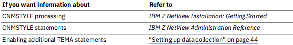
Loading the agent data files and configuring the portal
If the self-describing agent (SDA) function for the NetView agent has been enabled, it will update and
configure the Tivoli Enterprise Portal agent and client. If it is not enabled, follow these procedures to load
the NetView agent data files and to configure the Tivoli Management Services environment:
- “Loading files and configuring the Tivoli Enterprise Portal in a Windows environment” on page 29
- “Loading files and configuring the Tivoli Enterprise Portal in the Linux and AIX environments” on page
30
For more information on the self-describing agent function, see “Adding application support to the Tivoli
Enterprise Monitoring Server” on page 32.
Loading files and configuring the Tivoli Enterprise Portal in a Windows environment
The NetView agent data files are found on the IBM Z NetView Enterprise Management Agent data files
DVD. Do these steps to install the files.
- Log on to Windows using an ID with administrator authority.
- Close any running applications.
- Insert the Z NetView Enterprise Management Agent DVD into your DVD drive.
- Installation begins automatically.
- If the installation process does not start, run setup.exe from the Windows directory of the installation DVD. If setup.exe initialization fails, you might not have enough free disk space to decompress the setup files.
- From the Z NetView Enterprise Management Agent installation wizard Welcome window, click Next.
The Install Prerequisites window is displayed.
- From the Install Prerequisites window, click
Next
. The Software License Agreement is displayed.
- Read and accept the software license agreement. Click Accept to display the Select Features window.
- Select Tivoli Enterprise Portal Server and TEP Desktop Client.
Note: If you are using a distributed Tivoli Enterprise Monitoring Server on the same server as the Tivoli Enterprise Portal Server, additional component check boxes are displayed.
- Click
Next
. The Start Copying Files window is displayed.
- Click
Next
. When the files have been copied, the Setup Type window is displayed.
- Ensure that both Configure Tivoli Enterprise Portal and Launch Manage Tivoli Enterprise Monitoring Services are selected, and then click Next.
Note: If you are using a distributed Tivoli Enterprise Monitoring Server on the same server as the Tivoli Enterprise Portal Server, additional component check boxes are displayed.
- In the remaining windows in the installation wizard, you are prompted to provide information specific to your environment.
- When the installation wizard is finished, the InstallShield Wizard Complete window is displayed. The Display the Readme file check box should already be selected. Click Finish to exit the wizard.
- Review the readme file and then close the window.
- When the installation process completes:
- The Manage Tivoli Enterprise Monitoring Services window is displayed.
- If the Manage Tivoli Enterprise Monitoring Services window is not displayed, you can open it by clicking Start > Programs > IBM Tivoli Monitoring > Manage Tivoli Monitoring Services.
- Review the Tivoli Enterprise Portal Server Status field. If the server is not already started, right-click Tivoli Enterprise Portal Server and then click Start.
- Uncomment the USE_EGG1_FLAG=1 statement, in IBM\ITM\CNPS\kfwenv (Windows default directory).
- To log on to Tivoli Enterprise Portal, right-click the Tivoli Enterprise Portal Desktop and then click Start. The default user ID is sysadmin. There is no default password when running with a Tivoli Enterprise Monitoring Server on a z/OS system.
- Verify that the Enterprise Status window is displayed.
Loading files and configuring the Tivoli Enterprise Portal in the Linux and AIX®
environments
To complete this process, the components on which you are to install support must be in the same
directory structure as defined by the $install_dir environment variable or the value of the -h flag when
using the install.sh installation script.
Do these steps to install the agent data files:
- Stop the Tivoli Enterprise Portal Server by entering the following command from the $install_dir/bin
directory:
./itmcmd agent stop cq
- Run the following command from the installation media
./install.sh -h $install_dir
$install_dir is the home directory for the IBM Tivoli Monitoring products.
- When you are prompted for the IBM Tivoli Monitoring home directory, do one of the following steps:
- Press Enter to accept the default directory (/opt/IBM/ITM).
- Enter the full path to the installation directory that you used.
- When you are prompted for an installation option, enter 1 as shown in Figure 4 on page 30.
Select one of the following:
- Install products to the local host.
- Install products to depot for remote deployment (requires TEMS).
- Install TEMS support for remote seeding.
- Exit install.
Please enter a valid number:
1
- Review the license agreement and enter 1 to accept the terms of the agreement
- . A list of currently installed products is displayed followed by a numbered list of categories for which
product packages are available. Enter the number that corresponds to the Tivoli Enterprise Portal
Browser Client support as shown in Figure 5 on page 31.
Product packages are available for the following operating systems
and component support categories:
- Tivoli Enterprise Portal Browser Client support
- Tivoli Enterprise Portal Server support
- Tivoli Enterprise Monitoring Server support
Type the number for the OS you want, or type "q" to quit selection: 1
- At the prompt, enter y to confirm the request.
- . When the next list of the components to install is displayed, enter the number that corresponds to
the IBM Z NetView Enterprise Management Agent as shown in Figure 6 on page 31.
The following application supports are available for installation:
- IBM Z NetView Enterprise Management Agent V06.21.00.00
- All of the above
Figure 6. Installation of the agent
- At the prompt, enter y to confirm the installation. The installation begins.
-
Install the agent data files for each IBM Tivoli Monitoring component that is on the server, for example:
- Tivoli Enterprise Portal Browser Client support
- Tivoli Enterprise Portal Server support
- Tivoli Enterprise Monitoring Server support
- Select the number corresponding to the component for which you want support.
- At the prompt, enter 1 for Yes to confirm the request.
- Select the number corresponding to IBM Z NetView Enterprise Management Agent.
- At the prompt, enter 1 for Yes to confirm the request.
- If you have additional components, enter 1 for Yes and repeat these steps for the next component.
- After all of the components are installed, you are prompted whether you want to install additional
products or product support packages. Enter n.
- To configure the Tivoli Enterprise Portal Server with the new agent information, enter the following
command from the $install_dir/bin directory:
./itmcmd config -A cq
- Complete the configuration as prompted. For information about configuring the Tivoli Enterprise Portal Server, refer to the IBM Tivoli Monitoring: Installation and Setup Guide.
- Uncomment the USE_EGG1_FLAG=1 statement, in opt/IBM/ITM/config/cq.ini (UNIX default directory).
- Start the portal server by entering the following command:
./itmcmd agent start cq
Adding application support to the Tivoli Enterprise Monitoring Server
If you configured the NetView agent in an existing Tivoli Management Services environment, you must
add application support to that Tivoli Enterprise Monitoring Server, unless the self-describing agent
function is enabled. For a Tivoli Enterprise Monitoring Server that does not run in a z/OS environment, use
the IBM Z NetView Enterprise Management Agent data files DVD to do this.
Using the self-describing agent
Enabling the self-describing capability ensures that the proper level of application data is installed in the
Tivoli Enterprise Monitoring Server and Tivoli Enterprise Portal Server without manual installation of
support files. If the self-description feature is activated, runtime verification checks for updated
application data. If inconsistent conditions are detected, application data is propagated from the
monitoring agent to the various monitoring servers, which are automatically updated without requiring
recycling.
By default, support for self-describing agents is disabled on the hub monitoring server. To use this
feature, you must enable it on the hub monitoring server and configure that particular runtime
environment where the Tivoli Enterprise Monitoring Server resides to support it. For more information on
enabling the self-describing agent, see the IBM Tivoli OMEGAMON XE and Tivoli Management Services on
z/OS: Common Planning and Configuration Guide.
If the self-describing agent is enabled, and there is a hub Tivoli Enterprise Monitoring Server configured in
the runtime environment, and there are agents configured to run in the hub Tivoli Enterprise Monitoring
Server, you might consider creating a high availability hub runtime environment and converting the hub
Tivoli Enterprise Monitoring Server in this runtime environment to a remote Tivoli Enterprise Monitoring
Server.
If you decide not to create a high availability hub runtime environment, a hub recycle might be required
when you install maintenance for self-described enabled agents configured to run in the hub Tivoli
Enterprise Monitoring Server address space.
Without using a self-describing agent
If your hub Tivoli Enterprise Monitoring Server is not self-describing agent enabled, you have to manually
add application support to the hub Tivoli Enterprise Monitoring Server.
You can add application support to a z/OS Tivoli Enterprise Monitoring Server from the Tivoli Enterprise
Portal Server.
From a Windows Tivoli Enterprise Portal Server environment, do the following steps:
- From the Manage Tivoli Enterprise Monitoring Services window, verify that Tivoli Enterprise Portal Server is started.
- From the Manage Tivoli Enterprise Monitoring Services window, right-click Tivoli Enterprise Portal Server.
- From the pop-up menu, click Advanced > Add TEMS application support.
- Select On a different computer and click OK. A message is displayed that specifies that the Tivoli Enterprise Monitoring Server on the remote system must be running.
Note that you already started the Tivoli Enterprise Monitoring Server (see “Starting the hub Tivoli Enterprise Monitoring Server” on page 28).
- Click OK to continue. The Non-Resident TEMS Connection window is displayed.
- Enter the Tivoli Enterprise Monitoring Server node ID, for example, CNM01:CMS.
- Select the communication protocol (for example, IP.PIPE) that the Tivoli Enterprise Monitoring Server was configured to support in your environment.
- Click OK. The Non-Resident TEMS Connection window is displayed.
- Enter the host and port (for example, 1918) information. Click OK. The Select the application support to add to the TEMS window is displayed.
- Select IBM Z NetView Enterprise Management Agent Support, then click OK. The application support add operation starts. This can take some time to complete.
- When the operation completes, the Application Support Addition Complete window is displayed.
- Check the return codes.
- All operations should end with a return code of 0.
- If a return code is not 0, look in the < install_dir>\CNPS\Logs directory for diagnostic messages that you can use to determine the cause of the problem.
- Click Close to close the Application Support Addition Complete window.
- Click OK to confirm the Tivoli Enterprise Monitoring Server restart notification.
- Stop and restart the Tivoli Enterprise Monitoring Server.
From a UNIX or Linux Tivoli Enterprise Portal Server environment, start the Manage Tivoli Enterprise
Monitoring Services dialog box using the following command:
./itmcmd manage
Follow the steps as described for the Windows environment.
Chapter 4. Verifying the configuration
The verification scenarios in this chapter assume that the Tivoli Enterprise Monitoring Server and the
NetView program are already started. This chapter provides information about the following procedures:
- Starting the NetView agent on page 35
- Starting the connection to the NetView agent on page 35
- Starting the Tivoli Enterprise Portal Server on page 36
- Starting the Tivoli Enterprise Portal on page 36
- Verifying the operation of the agent on page 37
Starting the NetView agent
To start the NetView agent, do the following steps:
- From the z/OS system console, start the NetView agent using the following command:
S IBMNA
IBMNA is the default started task procedure name.
- Verify that the following messages are written to the system console:
BNH877I NETVIEW ENTERPRISE MANAGEMENT AGENT INTERFACE IS READY FOR WORK
BNH856I NETVIEW ENTERPRISE MANAGEMENT AGENT INITIALIZED
SUCCESSFULLY
Starting the connection to the NetView agent
Enabling the TEMA tower in the CNMSTYLE member defines the AUTONALC autotask. The initial
command run by this autotask is the NACMD command.
The NACMD command starts a long-running process that communicates with the NetView agent. When
this command is issued, the long-running process passes NetView information to the agent. The NACMD
command must remain active for the data collectors to store data into the agent data space. The process
also waits for NetView command requests from the agent. It services those requests and returns the
command responses.
When the NetView program initializes, the NACMD command fails until the NetView agent is started. After
you start the NetView agent, issue the following NACMD command from the NetView console:
EXCMD ?NALCLOP,NACMD
The NACMD command produces the following output in the NetView log:
NetView V6R3 - NM NetView CNM01 NETOP1 06/17/19 20:51:59 W
C NTVEF
|
BNH804I 'NETVIEW ENTERPRISE MANAGEMENT AGENT' 'CNMEMARX' INTERFACE
INITIALIZATION IS STARTING |
| C NTVEF |
BNH804I 'NETVIEW ENTERPRISE MANAGEMENT AGENT' 'CNMEMARX' INTERFACE
INITIALIZATION IS COMPLETE |
You can automatically start a hub Tivoli Enterprise Monitoring Server that runs in a z/OS environment and
the NetView agent when the NetView program initializes. To do this, see
“Starting the NetView agent at
initialization” on page 46.
Starting the Tivoli Enterprise Portal Server
Follow these procedures to start the Tivoli Enterprise Portal Server:
- “Starting the server in a Windows environment” on page 36
- “Starting the server in a Linux or UNIX environment” on page 36
Starting the server in a Windows environment
Follow these steps to start the server:
- From the Manage Tivoli Enterprise Monitoring Services window, review the status column to determine
if the Tivoli Enterprise Portal Server is started.
- If the status column does not display Started, right-click Tivoli Enterprise Portal Server and then
click Start.
Starting the server in a Linux or UNIX environment
Follow these steps to start the server:
- On the server where the Tivoli Enterprise Portal Server is configured, change to the $install_dir/bin
directory.
- To display a list of running IBM Tivoli Monitoring processes, enter the following command:
./cinfo -R
The information as shown in Figure 8 on page 36 is displayed:
*********** Sat Aug 2 16:29:14 EDT 2014 ******************
User : root Group: root sfcb
Host name : joker Installer Lvl:06.30.03.00
CandleHome: /opt/IBM/ITM
*********************************************************
Host Prod PID Owner Start ID ..Status
joker kf 1859 root 16:19 None ..running
joker cq 1937 root 16:19 None ..running
Figure 8. IBM Tivoli Monitoring processes
The product code for the Tivoli Enterprise Portal Server is cq.
- If the Tivoli Enterprise Portal Server process is not displayed or does not show a status of running,
enter the following command to start it:
./itmcmd agent start cq
Follow the steps as described for the Windows environment.
Starting the Tivoli Enterprise Portal
Follow these procedures to start the Tivoli Enterprise Portal:
- “Starting the portal in a Windows environment” on page 36
- “Starting the portal in a UNIX environment” on page 37
Follow these steps to start the portal:
- . If the Tivoli Enterprise Portal Desktop is not started, right-click Tivoli Enterprise Portal Desktop or
Tivoli Enterprise Portal Browser, and select Start.
- Log on to the Tivoli Enterprise Portal desktop client. The default user ID is sysadmin.
Starting the portal in a UNIX environment
To start the Tivoli Enterprise Portal, log on and then enter the following command:
./itmcmd agent start cj
Not all UNIX platforms support a desktop client.
Verifying self-describing agent enablement
If you used the self-describing agent feature to add application support, you can use ITM installation
verification processing to view messages that indicate successful processing for the NetView agent
application support file.
When the agent comes online for the first time with the self-describing agent support enabled, the agent
adds the catalog entries to the Tivoli Enterprise Monitoring Server, then it does the seeding process
(assuming that the self-describing agent installation records are still set to the default). If the NetView
agent is connected to a remote Tivoli Enterprise Monitoring Server, when it comes online, the hub
application support and seeding is processed first, followed by the remote Tivoli Enterprise Monitoring
Server.
To validate successful self-describing agent application support seeding, look for the KRAA0002 message
in the NetView agent RKLVLOG file and the KFASD101 message in the hub Tivoli Enterprise Monitoring
Server RKLVLOG file.
Verifying the operation of the agent
To verify that the NetView agent is successfully installed and operating, do these steps:
- Verify that "NetView" is in the Navigator Physical view. "NetView" is located under the z/OS system on
which you installed the NetView agent, as shown in Figure 9 on page 37.
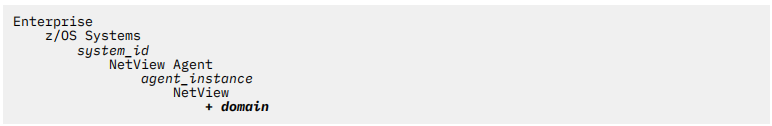
Figure 9. Navigator Physical view
- Expand the entry representing the NetView domain.
- Select the NetView Health leaf from the Navigator Physical view.
- The NetView Applications workspace is displayed as shown in Figure 10 on page 38.
- If you do not see the output, see the IBM Z NetView Troubleshooting Guide.
Usage note: This scenario assumes that the DISCOVERY tower is enabled.
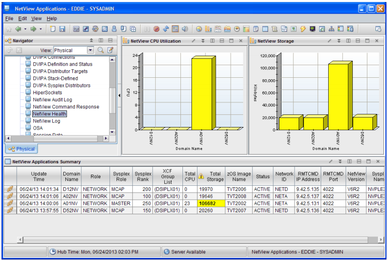
Figure 10. NetView Applications workspace
- To exit the client, click File > Exit from the toolbar.
Chapter 5. Customizing your system
This chapter provides information on the following topics:
- Implementing Security on page 39
- Defining NetView agent parameters on page 42
- Setting up the subtowers and associated functions on page 43
- Setting up data collection on page 44
- Starting the NetView agent at initialization on page 46
- Installing and configuring historical data collection and reporting on page 47
Implementing Security
When implementing security, decide which users require access to the Tivoli Enterprise Portal and the
NetView program, and which applications the users should be allowed to access.
You can use the following methods to provide security for the NetView agent:
- Defining user IDs on page 39
- Restricting access to commands on page 40
- Enabling additional security from the server on page 40
Defining user IDs
Each user requires a user ID to access data through the Tivoli Enterprise Portal (portal). The user ID must
be registered on the Tivoli Enterprise Portal Server. You can log on to the portal using the default user ID
(SYSADMIN) and register other user IDs through the Administer Users window. The SYSADMIN user ID
has full access and complete administrator authority.
When a Take Action command is issued from the NetView agent (or forwarded to the NetView program
from another IBM Tivoli Monitoring component), the portal user ID is sent to the NetView program
together with the command. The NetView operator ID that will execute the command is determined by
the portal user ID. If the portal user ID is mapped to a NetView operator ID in the CNMSTYLE member by
a NACMD.OPID.portaluserID statement, the NetView operator specified on the statement is used. If there
is not a NACMD.OPID statement for the portal user ID in the CNMSTYLE member, the portal user ID is
used as the NetView operator ID. The resulting NetView operator name is then validated according to the
NetView operator ID criteria (see the OPERATOR statement in the
IBM Z NetView Administration
Reference).
Command authorization for the Take Action commands uses the NetView task that was determined
previously. By default, the following NetView operator IDs are defined:
- SYSADMIN (the default portal user ID)
- NATEP1
- NATEP2
To create additional user IDs to use with the NetView agent, use one of the following methods:
- Create a new portal user ID that matches a new or existing NetView operator ID. This is the preferred method. For information about creating new user ID, see IBM Tivoli Monitoring: Administrator's Guide.
- Define the existing portal user ID to the NetView program. For information about defining the user ID to the NetView program, refer to the IBM Z NetView Security Reference.
- Map the portal user ID to a valid NetView operator ID. For more information, review the NACMD.OPID.TEPLogonID statement in the CNMSTYLE member.
Usage notes:
- Do not map multiple portal user IDs to a single NetView operator ID because multiple portal user IDs can have the same command authorization. This might also cause throughput problems.
- Do not map a portal user ID to a NetView operator ID that is used to log on to a 3270 terminal. The Take Action command might run on an active NetView operator ID with unpredictable results. Instead, map the portal user ID to a NetView autotask.
- If you enable password authentication by the hub Tivoli Enterprise Monitoring Server, consider that password phrases are not supported by the Tivoli Enterprise Portal login and therefore cannot be passed to the Tivoli Enterprise Monitoring Server for RACF® verification. Because of this restriction, if you create a portal user ID that matches the NetView operator ID, only use NetView operator IDs that use passwords and not password phrases.
Restricting access to commands
To restrict which NetView operator IDs can issue the NACMD command or the NetView Take Action
commands, update the command authorization table in the CNMSCAT2 member or the RACF definitions
in the CNMSAF2 member in the DSIPARM data set. For more information on updating the CNMSAF2 and
CNMSCAT2 members, refer to IBM Z NetView Security Reference.
Enabling additional security from the server
You can implement the following security features at the hub Tivoli Enterprise Monitoring Server:
- Password authentication
- Data encryption
- Command authorization
Setting up password protection
Use the following steps to enable password authentication by the hub Tivoli Enterprise Monitoring Server:
- From the Parameter Generator (PARMGEN) Workflow panel, select option 8 to customize configuration
profiles. This option enables you to override or specify values for the monitoring server configuration
files.
- Select option 1 to customize the RTE LPAR profile.
- To enable security when a user logs on to the monitoring server, edit the monitoring server RTE
section. Set the following statement to Y (Yes):
KDS_TEMS_SECURITY_KDS_VALIDATE Y
- Configure RACF or your system authorization facility (SAF) product to authenticate the sysadmin user
ID and portal user IDs. For a complete description of defining user IDs to RACF, refer to the RACF
library.
Remember that password phrases are not supported by the Tivoli Enterprise Portal login and therefore
cannot be passed to the Tivoli Enterprise Monitoring Server for RACF verification.
Setting up encryption
You can use IBM Integrated Cryptographic Service Facility (ICSF) to create and manage the encryption of
data between components through the use of digital certificates. If ICSF is not installed on your z/OS
system, the monitoring server uses an alternative, less secure encryption scheme.
Communication between a hub monitoring server and the Tivoli Enterprise Portal Server is encrypted. On
the Tivoli Enterprise Portal Server, the Global Security Toolkit (GSKit) is used for encryption and
decryption. On z/OS, GSKit is known as the ICSF. Since both components must be using the same
scheme, if the hub system does not use ICSF, you must configure the Tivoli Enterprise Portal Server to use
the less secure scheme (EGG1) as well. For more information on setting up encryption, see IBM Tivoli OMEGAMON XE and Tivoli Management Services: Configuring the Tivoli Enterprise Monitoring Server on z/OS.
Performing command authorization for Take Action commands
System commands issued from the Tivoli Enterprise Portal using Take Action commands or situations run
without command authorization or an audit trail. You can use the NetView product to perform command
authorization for these system commands and to provide an audit trail.
Command authorization for the Take Action system commands uses the portal user ID, which is sent to
the NetView program with the command. The portal user ID that is sent is used to determine the user ID
that issues the command. When a command is sent from a situation, the user ID that is sent is the last
one that edited the situation. Password validation is not performed. If a NetView operator ID exists that
matches the portal user ID and has the required command authorization, then the command is run on the
existing NetView operator ID. For more information about protecting MVS system commands, refer to the
IBM Z NetView Security Reference.
Some agents provide their own Take Action commands, known as agent commands. Agent commands
have an associated two-character prefix for their product code. These commands are not sent to the
NetView program for command authorization. The only agent commands that are sent to the NetView
program for authorization are the NetView agent commands prefixed with NA:. For information about
creating or editing a Take Action command, refer to IBM Tivoli Monitoring: Tivoli Enterprise Portal User's
Guide.
You can display Take Action commands and command responses in the NetView Command Response
workspace. Additionally, you can display the BNH806I and BNH807I audit trail messages in the NetView
Audit Log workspace.
Use the following steps to enable command authorization checking for system commands:
-
From the Parameter Generator (PARMGEN) Workflow panel, select option 8 to customize configuration profiles. Use this option to override or specify values for the monitoring server configuration files.
-
Select option 1 to customize the RTE LPAR profile.
-
Use the following parameters to enable command authorization checking for system commands sent from the hub monitoring server:
-
KDS_PPI_RECEIVER:
Specifies the name of the NetView PPI Receiver. The value must match the PPI receiver name specified on the NetView APSERV command. The default value is CNMPCMDR.
-
KDS_PPI_SENDER
Optional: Specify a value for the PPI sender. If you do not specify a value, the job name of the monitoring server is used when the command is written to the NetView log.
For definitions for the common parameters, see the IBM Tivoli OMEGAMON XE and Tivoli Management Services on z/OS: Parameter Reference. For NetView agent definitions, see Appendix C, “Enterprise Management Agent Changes,” on page 73. For information about configuring security settings for a monitoring server running in a z/OS environment, see IBM Tivoli OMEGAMON XE and Tivoli Management Services: Configuring the Tivoli Enterprise Monitoring Server on z/OS
-
Equivalent parameters are available to enable command authorization checking for commands sent from the NetView agent:
-
KNA_AGT_KGLHC_PPI_RECEIVER
Specifies the name of the NetView PPI Receiver. The value must match the PPI receiver name specified on the NetView APSERV command. The default value is CNMPCMDR.
-
KNA_AGT_KGLHC_PPI_SENDER
Optional: Specify a value for the PPI sender.
For definitions for the common parameters, see the IBM OMEGAMON and Tivoli Management Services on z/OS: Parameter Reference. For NetView agent definitions, see Appendix C, “Enterprise Management Agent Changes,” on page 73. For information about configuring security settings for a monitoring server running in a z/OS environment, see IBM Tivoli OMEGAMON XE and Tivoli Management Services: Configuring the Tivoli Enterprise Monitoring Server on z/OS
-
Press F3 to return to the menu panel.
-
Select option 2 to update global parameters. To enable the monitoring server or the NetView agent to forward Take Action commands to the NetView program, uncomment and update the GBL_DSN_NETVIEW_CNMLINK statement.
-
Usage note: For the Tivoli Enterprise Monitoring Server and NetView agent started task procedures, ensure that the NetView CNMLINK data set is included as part of the RKANMODL DD data set concatenation rather than including it in the z/OS link list.
-
Press F3 to return to the menu panel.
The NetView APSERV command must be running to receive the system commands from the Tivoli
Enterprise Monitoring Server or a z/OS agent. Use the -TEMA operand to direct commands and command
responses to the NetView Command Response workspace and to send BNH806I and BNH807I audit trail
messages to the NetView Audit Log workspace. For more information about the APSERV command, refer
to IBM Z NetView Command Reference Volume 1 (A-N).
To start the APSERV command at NetView initialization, do the following steps:
- Copy the following statements from the CNMSTYLE member to the CNMSTUSR or CxxSTGEN member:
* function.autotask.APSERV = AUTOTMSI
*
AUTOTASK.?APSERV.Console = *NONE* //
AUTOTASK.?APSERV.InitCmd = APSERV xyz // change xyz to PPI receivername
- Uncomment the function.autotask.APSERV statement. If necessary, change the autotask name. This
statement specifies the autotask on which to run the APSERV command.
- Change xyz to match the PPI Receiver name that you specified in the configuration tool (CNMPCMDR is
the default name). Additionally, you can add the -TEMA operand to send commands, command
responses, and audit trail messages to the NetView agent workspaces.
Defining NetView agent parameters
The CNMSTYLE member is used during NetView initialization. To make changes to a statement in the
CNMSTYLE member, copy the statement to the CNMSTUSR or CxxSTGEN member. You can then modify
the statement. For information about changing CNMSTYLE statements, see IBM Z NetView Installation:
Getting Started.
Update the following CNMSTYLE statements required for your enterprise:
- . You can specify the number of seconds to wait for a response from a command issued at the Tivoli
Enterprise Portal. To change the default value of 90 seconds, uncomment the NACMD.WAITSECS
statement and modify the number of seconds:
*NACMD.WAITSECS = 90
- The NetView agent uses the program-to-program interface (PPI) for communication with the NetView
program. Ensure that the PPI name on the NACMD.DESTPPI statement matches the name that you
specified using the following PARMGEN statement:
KNA_PPIRCV_PPI_RECEIVER_CNMEMARX "CNMEMARX"
- (Optional) The NetView agent uses a PPI sender name for communication with the NetView program.
The default name is the NetView domain.
(TEMA)NACMD.LCLPPIRV = //NetView Local PPI receiver name
- . A data space is created by the NetView agent address space when successful communication between
the NetView program and the agent is established using the NACMD command. When the NACMD
command processing ends, the associated data space is deleted. You can keep a data space active for
up to 24 hours. This is useful for debugging problems. To do this, change the default value of 0 to the
number of hours required to keep the data space active.
(TEMA)NACMD.PERSIST = 0 //Do not keep data space around
- To reload and reset the values that you changed, run the RESTYLE NACMD command.
- For the new values to take effect, stop the NACMD command and then issue it again.
Setting up the subtowers and associated functions
To set up the subtowers and associated functions for the NetView agent, review and modify the following
CNMSTYLE statements in the CNMSTUSR or CxxSTGEN member:
- Enable any components for which you want to collect data by removing the asterisk (*) preceding the
tower name in the TOWER.TEMA statement:
TOWER.TEMA = *HEALTH *CONNACT *CONINACT *SESSACT *DVDEF *DVTAD *DVCONN
*SYSPLEX *TELNET *DVROUT *OSA *HIPERSOCKETS
| Table 4. TEMA subtowers |
| Subtower |
Description |
| CONINACT |
Enables the collection and display of inactive TCP/IP connections.
If you enable the CONINACT subtower, ensure that the TCPIPCOLLECT tower is enabled. Also ensure that TCP/IP connection management is enabled. For information about how to do this, refer to IBM Z NetView Installation: Configuring Additional Components.
|
| CONNACT |
Enables the collection and display of active TCP/IP connections.
If you enable the CONNACT subtower, ensure that the TCPIPCOLLECT tower is enabled.
|
| DVCONN |
Enables the display of DVIPA connections.
If you enable the DVCONN subtower, ensure that the DVIPA tower is enabled. For information about how to do this, refer to IBM Z NetView Installation: Configuring Additional Components.
|
| DVDEF |
Enables the display of DVIPA definition and status data.
If you enable the DVDEF subtower, ensure that the DVIPA tower is enabled. For information about how to do this, refer to IBM Z NetView Installation: Configuring Additional Components.
|
| DVROUT |
Enables the display of VIPA route and distributed DVIPA connection routing data.
If you enable the DVROUT subtower, ensure that the DVIPA tower is enabled. For information about how to do this, refer to IBM Z NetView Installation: Configuring Additional Components.
|
| DVTAD |
Enables the display of distributed DVIPA data.
If you enable the DVTAD subtower, ensure that the DVIPA tower is enabled. For information about how to do this, refer to IBM Z NetView Installation: Configuring Additional Components.
|
| HEALTH |
Enables the collection and display of NetView task data.
|
| HIPERSOCKETS |
Enables the display of HiperSockets configuration and status information.
If you enable the HIPERSOCKETS subtower, make sure that Resource Object Data Manager (RODM) is enabled. For information about how to do this, refer to IBM Z NetView Installation: Configuring Graphical Components.
|
| OSA |
Enables the display of OSA channels and ports information.
If you enable the OSA subtower, make sure that RODM is enabled. For information about how to do this, refer to IBM Z NetView Installation: Configuring Graphical Components.
|
| SESSACT |
Enables the collection and display of active sessions.
If you enable the SESSACT subtower, ensure that the NLDM tower is enabled. Note that the SESSACT subtower is only supported in one NetView program per LPAR.
|
| SYSPLEX |
Enables the display of stack configuration and status data.
|
| TELNET |
Enables the display of Telnet servers and Telnet server port information.
|
Note that when you enable a subtower, the associated subtower statements are also enabled.
- To improve performance on the master NetView program, you can combine DVIPA updates that are to
be sent to the NetView agent. The DVIPA.Mast.EMARf.Delay statement specifies the time period that
the master NetView program waits before writing data to the NetView agent data space. By using this
statement, multiple updates to a data space can occur with one operation. The delay starts when the
first notification is received indicating that new DVIPA data was received by the master NetView
program so that the data can be available for viewing at the agent. The default wait period is 180
seconds. Adjust this statement as necessary for your system. Refer to the IBM Z NetView Installation:
Configuring Additional Components for more information on configuring sysplexes and enabling
sysplex management.
- To enable the CNMSTYLE statements that you changed, do one of the following steps:
- If you updated TEMA tower or subtower statements, recycle the NetView program.
- To reset other TEMA-related CNMSTYLE statements, run the RESTYLE NACMD command. For the
new values to take effect, stop the NACMD command and then issue it again.
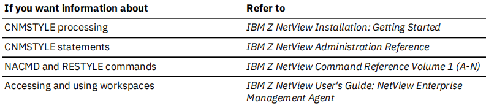
Setting up data collection
You can set the data collection time interval and control the size of NetView agent workspaces. To do this,
review and modify the CNMSTYLE statements in Table 5 on page 45.
| Table 5. Data collection |
| Workspace |
Time interval (in seconds) |
Size (number of rows of data) |
| Distributed DVIPA Connection Routing |
(DVIPA.DVROUT) DVIPA.INTDVROUT |
(TEMA.DVROUT) NACMD.ROWSDVROUTCR |
| Distributed DVIPA Server Health |
(DVIPA.DVTAD) DVIPA.INTDVTAD |
(TEMA.DVTAD) NACMD.ROWSDVTADSH |
| Distributed DVIPA Targets |
(DVIPA.DVTAD) DVIPA.INTDVTAD |
(TEMA.DVTAD) NACMD.ROWSDVTADDT |
| DVIPA Connections |
(DVIPA.DVCONN) DVIPA.INTDVCONN |
(TEMA.DVCONN)NACMD.ROWSDVCONN |
| DVIPA Definition and Status |
(DVIPA) DVIPA.INTDVDEF |
(TEMA.DVDEF)NACMD.ROWSDVDEFDS |
| DVIPA Sysplex Distributors |
(DVIPA.DVTAD)DVIPA.INTDVTAD |
(TEMA.DVTAD)NACMD.ROWSDVTADSD |
| HiperSockets Configuration and Status |
(DISCOVERY.INTERFACES)DISCOVERY.INTINTERFACE |
(TEMA.HIPERSOCKETS)NACMD.ROWSHIPERSOCK |
| Inactive TCPIP Connection Data |
(TEMA.CONINACT)NACMD.INTCONINACT |
(TEMA.CONINACT)NACMD.ROWSCONINACT |
| NetView Applications |
(DISCOVERY)DISCOVERY.INTAPPL |
(TEMA.SYSPLEX)NACMD.ROWSNVAPPS |
| NetView Audit Log |
|
(TEMA)NACMD.ROWSALOG |
| NetView Command Response |
|
(TEMA)NACMD.ROWSNVCMD |
| NetView Log |
|
(TEMA)NACMD.ROWSNVLOG |
| NetView Tasks |
(TEMA.HEALTH)NACMD.INTHEALTH |
(TEMA.HEALTH)NACMD.ROWSHEALTH |
| OSA Channels and Ports |
(DISCOVERY.INTERFACES)DISCOVERY.INTINTERFACE |
(TEMA.OSA)NACMD.ROWSOSA |
| Session Data |
(TEMA.SESSACT)NACMD.INTSESSACT |
(TEMA.SESSACT)NACMD.ROWSSESSACT |
| Stack Configuration and Status |
|
(TEMA.SYSPLEX)NACMD.ROWSSTCKCFG |
| TCPIP Connection Data |
(TEMA.CONNACT)NACMD.INTCONNACT |
(TEMA.CONNACT)NACMD.ROWSCONNACT |
| Telnet Server Configuration and Status |
(DISCOVERY.TELNET)DISCOVERY.INTTELNET |
(TEMA.TELNET)NACMD.ROWSTELCFG
TEMA.TELNET)NACMD.ROWSTELPRT |
| VIPA Routes |
(DVIPA.DVROUT)DVIPA.INTDVROUT |
(TEMA.DVROUT)NACMD.ROWSDVROUTV |
To enable the statements that you changed:
- For DISCOVERY intervals, run the RESTYLE DISCOVERY command.
- For DVIPA intervals, run the RESTYLE DVIPA command.
- For new values associated with NACMD statements, stop the NACMD command and then issue it again.
Changes to the sampling interval occur at the next interval.
You can use the following commands to dynamically start and stop data collection for configured data
collectors:
- COLLCTL for DISCOVERY subtowers: APPL, INTERFACES, TELNET
- COLLCTL for DVIPA subtowers: DVCONN, DVDEF, DVROUT, DVTAD
- NACTL for TEMA subtowers: CONNACT, CONINACT, HEALTH, SESSACT
You can use the LISTINFO keyword with all these commands to verify that data collection started.
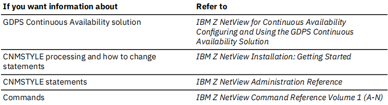
Starting the NetView agent at initialization
You can start the hub monitoring server and the NetView agent when the NetView program initializes by
modifying the following CNMSTYLE statements in the CNMSTUSR or CxxSTGEN member:
- Ensure that the INIT.EMAAUTO statement is set to YES:
(TEMA)INIT.EMAAUTO = Yes
This statement indicates that the NetView program should process the EMAAUTO.TEMS and
EMAAUTO.TEMA statements.
- To start the hub monitoring server automatically, update the EMAAUTO.TEMS statement to include its
startup procedure name and parameters:
(TEMA)EMAAUTO.TEMS.procStr = server_procname
After the monitoring server starts, NetView message automation starts the NetView agent using the
CNMSEMAA automation table member in the DSIPARM data set. Message automation uses the startup
procedure name from the EMAAUTO.TEMA statement if a value other than *NONE* is specified. If you
specify a value of *NONE* on the EMAAUTO.TEMS statement, the hub monitoring server does not start
automatically.
- To start the NetView agent automatically, update the EMAAUTO.TEMA statement to include its startup
procedure name and parameters:
(TEMA)EMAAUTO.TEMA.procStr = agent_procname
If the monitoring server is already started, the NetView agent is started by NetView message
automation.
- Recycle the NetView program for these changes to take effect.
If you are running the GDPS Continuous Availability solution, see the IBM Z NetView for Continuous
Availability Configuring and Using the GDPS Continuous Availability Solution for information about
configuring these CNMSTYLE statements in that environment.
Using situations
The IBM Z NetView Enterprise Management Agent provides a set of situations that you can use to monitor
the systems in your network. Situations are used to identify monitored resources that meet certain
performance criteria and to raise an event when the criteria are met. A situation definition includes a
sampling frequency, a set of conditions, and a list of monitored systems. These have implications for
processor and storage consumption, and the cumulative effect of all the active situations has implications
for performance.
All the situations provided for the IBM Z NetView Enterprise Management Agent are defined such that
they are not automatically started. When planning for the Z NetView Enterprise Management Agent,
evaluate the provided situations. Determine which situations to start automatically, and eliminate
situations that are not relevant for your environment. If necessary, modify existing situations or create
new situations to meet the needs of your enterprise.
For descriptions of the IBM Z NetView Enterprise Management Agent situations, see the IBM Z NetView
User's Guide: NetView Enterprise Management Agent. For more information about situations, see the IBM
Tivoli Monitoring Users Guide.
Installing and configuring historical data collection and reporting
Tivoli Management Services provides the following types of historical data collection:
- Short-term historical data is stored either in the persistent data store (on z/OS systems) or in files (on
distributed systems). Additional prerequisite software is not required for short-term historical data
collection, however the data sets that are used by the persistent data store must be configured using
the PARMGEN tool.
- Long-term historical data is stored in Tivoli Data Warehouse. For information about configuring the
warehouse proxy for Tivoli Data Warehouse and a list of supported databases, releases and operating
system platforms, see the IBM Tivoli Monitoring: Installation and Setup Guide. Long-term history also
requires installation of the warehouse proxy software (provided) and configuration of an Open Database
Connectivity (ODBC) connection. Use the warehouse proxy installation default support for defining
database tablespaces and creating the ODBC connection. Short-term historical data collection must be
enabled and configured if you want to perform long-term historical data collection.
Tivoli Enterprise Portal provides historical data collection and reporting capabilities. If historical data
collection was configured and started for an attribute group on the managed systems specified, you can
set a time span for retrieving historical data into a query-based view.
You can collect historical data for the NetView agent attribute groups listed in Table 9 on page 54. These
attribute groups are displayed in the Tivoli Enterprise Portal History Collection Configuration window.
The NetView agent provides predefined historical reports at the Tivoli Enterprise Portal. For more
information, see “Historical reports using Tivoli Common Reporting” on page 48.
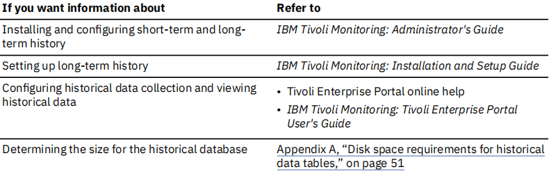
Historical reports using Tivoli Common Reporting
Tivoli Common Reporting is a reporting tool common across many Tivoli products that provides a
consistent approach to viewing and administering reports. The NetView reports are historical reports run
against data stored in the Tivoli Data Warehouse. The NetView reports are provided as report packages,
archive files containing reports, documentation, graphics, and dynamic link libraries. The report package
is included as a .zip file (NetView_for_zOS_TCR.zip) on the NetView agent application DVD in the
REPORTS directory. The REPORTS directory is divided into subdirectories named with the three-character
prefix that identifies the product (the prefix for the NetView agent is kna). For example, on a Windows
computer, if the drive is labeled D:, reports are in directories such as: D:\REPORTS\kna.
To run the reports, install Tivoli Common Reporting, provided with Tivoli Management Services. The
following sources provide more information:
- See Appendix B, “Reports using Tivoli Common Reporting,” on page 71 for reports available with the
NetView agent.
- See the IBM Tivoli Common Reporting Users Guide for information about Tivoli Common Reporting,
including information about installing and administering Tivoli Common Reporting and creating reports.
- See IBM OMEGAMON and Tivoli Management Services on z/OS: Reports for Tivoli Common Reporting for
information about setting up Tivoli Common Reporting for the NetView agent and the reports available
for OMEGAMON XE monitoring agents for zSeries. The book is part of the OMEGAMON shared
publications available from the NetView information center.
Chapter 6. Tuning components
This chapter describes tuning information for the components of the NetView agent. For additional
performance information, refer to the IBM Z NetView Tuning Guide.
Tuning ITMS:Engine values
IBM Tivoli Management Services: Engine (ITMS:Engine) is a common component for both the Tivoli
Enterprise Monitoring Server and for the NetView agent. It has startup parameters that are defined with
appropriate defaults for many customer environments and these parameters are defined in the data set
pointed to by the RKLVIN DD statement in the started task procedure.
The following trace entry indicates that an error occurred while the NetView agent was returning data:
Can't allocate 4195800 bytes for sample data, UADVISOR_KNA_KNATCI
You receive this message if a query is specified that returns a large number of rows of data, causing an
out-of-memory condition. The message source (KNATCI) varies, depending on the workspace that fails.
out-of-memory condition. The message source (KNATCI) varies, depending on the workspace that fails.
To resolve this problem, you can make one of the following changes:
- Modify the query so that it returns fewer rows of data
- Change the ITMS: Engine storage parameters by changing the LIMIT and MINIMUM settings for the
TEMS and agent in the KDSSYSIN and KNASYSIN members in RKANPARU—but applying maintenance to
the RTE might overwrite the changes. You can also change the values using the PARMGEN tool, which
will preserve the changes.
Usage notes:
– Use the same LIMIT and MINIMUM settings for the monitoring server as those specified by the
largest NetView agent. If you increase the LIMIT and MINIMUM settings for the NetView agent, also
increase the LIMIT and MINIMUM settings on the corresponding remote monitoring server (if
applicable) and hub monitoring server. For information on changing the storage settings, see IBM
Tivoli OMEGAMON XE and Tivoli Management Services on z/OS: Parameter Reference.
– If you choose to configure the LIMIT(n,P) statement, do not use a value larger than 23 for n.
Changing the LIMIT parameter
Use the
LIMIT parameter to specify the largest block of extended storage (it is not recommended to set
the limit for primary storage).
If you are using PARMGEN, the
KDS_TEMS_STORAGE_LIMIT_EXTEND parameter sets the value for the
TEMS. For the NetView agent, the parameter is
KNA_X_AGT_STORAGE_LIMIT_EXTEND. If you are
directly editing the RKANPARU members, use the following syntax to reset the extended storage:
LIMIT(n,X)
This value is specified in bytes, as a power of 2. For example, if n is 22, the largest block that can be
allocated is 4 MB. If the LIMIT value is too small and a process attempts to allocate a block of storage
larger than the LIMIT value specifies, program interruption U0100 or U0200 results. When managing
large numbers of resources, change this value to LIMIT(25,X).
Setting the MINIMUM parameter
Use the
MINIMUM parameter to specify the minimum amount of extended storage. If you are using
PARMGEN, the
KDS_TEMS_STORAGE_MINIMUM_EXTEND parameter sets the value for the TEMS. For the NetView agent, the parameter is
KNA_AGT_STORAGE_MINIMUM_EXTEND. If your are directly editing the
RKANPARU members, use the following syntax to reset the extended storage:
MINIMUM (8192,X | n,X)
where
n represents the minimum amount of extended storage (in KB). To specify a 16MB above-the-line
region, code MINIMUM(16384,X).
If you are managing a large number of resources, use the following statement:
MINIMUM (500000,X)
Changing the default value for short-term history
Historical data from the previous 24 hours is retrieved from the persistent data store for display at the
Tivoli Enterprise Portal. Historical data from earlier time periods is retrieved from Tivoli Data Warehouse.
You can alter the default value by modifying the KFW_REPORT_TERM_BREAK_POINT environment
variable in the KNAENV member of the RKANPARU data set. The value of this variable is specified in
seconds. The default is 86400 (the number of seconds in a 24-hour period). When you increase this value,
historical data is retrieved from the persistent data store for time periods prior to the previous 24-hour
period. If you decrease this value, historical data is retrieved from the Tivoli Data Warehouse.
You can use the following guidelines to set the KFW_REPORT_TERM_BREAK_POINT environment
variable:
- If you are not using Tivoli Data Warehouse and you would like to view additional historical data,
increase the value of the KFW_REPORT_TERM_BREAK_POINT environment variable. Ensure that the
persistent data stores are large enough to contain more than 24 hours of data.
- If you specified the warehouse interval to be one hour and you want to use smaller persistent data
stores to view the historical data, decrease the value of the KFW_REPORT_TERM_BREAK_POINT
environment variable.
For additional information on environment variables, refer to the
IBM Tivoli Monitoring: Administrator's
Guide.
Tuning the Tivoli Data Warehouse
If you store large amounts of data from the NetView agent in a DB2® database, review the default
database manager settings. For information about relational database design and performance tuning for
DB2 database servers, refer to the
IBM Tivoli Monitoring: Administrator's Guide.
Appendix A. Disk space requirements for historical
data tables
This appendix provides you with the following information:
- Determining storage requirements
- Allocating additional storage and data sets
- Listing of attribute groups and record size for each table that is supported by short-term history
Network size and the type of network resources that are managed vary widely among enterprises. The
amount and type of short-term historical data which you choose to retain greatly affects the amount of
storage that is required. This makes it difficult to provide one size for the persistent data store that
reflects the needs of most enterprises. The default storage allocation is efficient for a very small network.
Most users must allocate additional storage and data sets.
You can estimate the storage requirements for collecting historical data using an iterative approach. If
this approach is not acceptable in your environment, then you can use the information in this appendix to
calculate storage size.
Estimating data storage using an iterative approach
The iterative approach begins by using the default storage allocation provided by the NetView agent.
One method that you can use to evaluate your current space utilization for short-term history is to start
historical collection for all resources that you are storing in short-term history and collect at least 25
hours of data. If you cannot display a report containing the last 24 hours of data, for any attribute group,
then allocate additional storage, data sets, or both.
Another approach is to examine the RKPDLOG log that is defined in the startup procedure for the NetView
agent. You can view this log from MVS/TSO in the SDSF Status window. To evaluate the log, follow these
steps:
- Record the elapsed time between these two messages:
KPDIFIL: Initial output file selection completed successfully for group KNA
KPDDSTR: File &rhilev.&midlev.RKNAHIS3 is full
By default, there are 3 history data sets (RKNAHIS1 – RKNAHIS3) defined. Short-term history first
uses the data set with the highest suffix (for example, RKNAHIS3) and then continues to the
RKNAHIS1 data set, before it wraps back to the data set with the highest suffix.
- Evaluate the elapsed time:
- If the elapsed time is 24 hours or greater, you have enough storage allocated for users to view
reports with 24 hours of data.
- If the elapsed time is less than 24 hours, allocate additional storage or data sets, or both, based on
the number of hours between the two messages.
To increase the space allocation, use the two configurable storage parameters: allocated Cylinders
and Group Count. For more information, see “Allocating additional storage and short-term history
data sets” on page 52.
The main problems with using the iterative approach are:
- Every time you adjust storage parameters (number of cylinders and number of data sets), you must stop
the agent.
- The network that you use to determine storage parameters might not be comparable in size to the
network where you collect short-term history.
- There is no consideration for future network growth.
Allocating additional storage and short-term history data sets
The PARMGEN tool provides default storage size values for short-term history data sets in the persistent
data store. You can override these defaults. The NetView agent storage size defaults are shown in
Table 6
on page 52
| Table 6. Definition and default values for Cylinders and Group Count parameters |
| Storage Parameters |
Default Values |
Cylinders
Cylinders is a measure of storage capacity on a disk drive.
Considering control blocks and indexing, the persistent data store
can store approximately 717 KB of measurement data on one
cylinder of a 3390 disk drive. |
140 (For RKNAHIS data sets) |
Group Count
Group Count refers to the number of persistent data store data
sets. The JCL job to allocate the persistent data store data sets is
generated by the PARMGEN tool. Each persistent data store data
set is allocated with (Cylinders / Group Count) number of cylinders.
A Group Count of 3 means that 3 RKNAHISx data sets are
allocated for measurement data. |
3 |
Short-term history is more than a place to store data. It enables the following functions:
- Continuous operations without manual attention to pruning outdated data
- Dynamic data set switching (data wrapping without losing data)
- Display of a full 24 hours of data, in a Tivoli Enterprise Portal report, at any time of the day
These functions require that one of the data sets be temporarily unavailable in preparation for data set
switching. In addition, preserving the ability to display a full 24 hours of data in a report at any time of day
might require that an additional data set be allocated to accommodate when the data set being written to
is almost empty.
To account for the extra data sets needed to enable these features, apply a
Group Count factor to the total
number of cylinders required to store 24 hours of data in your network. The Group Count factor expresses
the storage relationship of Group Count to the number of cylinders to allocate, for example:
Cylinders to Allocate = (Cylinders needed for 24 hours data) X (Group Count Factor)
Group Count Factor = (Group Count / (Group Count - 2))
The following two examples illustrate the effect of the Group Count Factor. These examples show how
increasing the Group Count value can use the allocated cylinders of space more efficiently (that is,
requires less space for the same amount of data). However, increasing Group Count also uses more
processing time for data set switching.
This formula is used to calculate DASD for both examples:
Cylinders to Allocate = (Cyls / 24 hours data) x (Group Count /(Group Count - 2))
Cylinders to Allocate = 70 X (3/(3-2) = 210
Some alternate Group Count values illustrate the impact that modifying this parameter has on the amount
of DASD (cylinders of 3390) to be allocated.
| Table 7. Example 1: Small test network requiring only 70 cylinders of 3390 DASD for 24 hours of data |
Cylinders Needed for
24 Hours of Data |
Group Count |
Group Count Factor |
Cylinders to Allocate |
| 70 |
3 |
3.00 |
210 |
| 70 |
4 |
2.00 |
140 |
| 70 |
5 |
1.67 |
117 |
| 70 |
6 |
1.50 |
105 |
| 70 |
7 |
1.40 |
98 |
| 70 |
8 |
1.33 |
94 |
| 70 |
9 |
1.29 |
91 |
| 70 |
10 |
1.25 |
88 |
| Table 8. Example 2: Larger network requiring 500 cylinders of 3390 DASD for 24 hours of data |
| Cylinders Needed for 24 Hours of Data |
Group Count |
Group Count Factor |
Cylinders to Allocate |
| 500 |
3 |
3.00 |
1500 |
| 500 |
4 |
2.00 |
1000 |
| 500 |
5 |
1.67 |
835 |
| 500 |
6 |
1.50 |
750 |
| 500 |
7 |
1.40 |
700 |
| 500 |
8 |
1.33 |
665 |
| 500 |
9 |
1.29 |
645 |
| 500 |
10 |
1.25 |
625 |
For the small network in
Table 7 on page 53, retaining the default Group Count value of 3 (or at most,
increasing to 4) is adequate. However, for the larger network in
Table 8 on page 53, increase group count
and cylinders to 6 and 750 or 7 and 700. For a monitored network with more than 10 000 TCP/IP
connections, consider using a Group Count of at least 7.
When you consider these examples and the default values (Cylinders 3390 = 140 and Group Count = 3),
you can accept the default values with no loss of function for the small network. For the larger network in
Example 2, you cannot accept the default values and confidently expect that users can view a report with
24 hours of data at any time of day. However, if you increase Group Count to at least 6 (and your network
size estimate is correct), you can provide this support by allocating 750 cylinders of additional storage to
short-term history.
Calculating data storage using formulas
Before calculating your storage requirements, determine the following information:
- Resource types (attribute groups) that need to be collected for history
- Approximate quantity of each resource type that is monitored. If the number of monitored resources
varies widely between different LPARs, you might want to estimate the different storage requirements
for each LPAR.
- Historical collection interval.
You can collect historical data for the NetView agent attribute groups listed in Table 9 on page 54. This
table displays the storage that is used when monitoring one resource for 24 hours.
| Table 9. Historical data tables |
| Attribute group |
Attribute group
Table identifier |
Default |
Estimated storage
required for
resource (in KB) |
Estimated storage
required for 1
resource (3390
cylinders; No. of
cylinders = KB / 717) |
| NA DB2 Replication Apply Server1 |
KNARD3 |
Yes |
8 |
.0112 |
| NA DB2 Replication Apply Workload1 |
KNARD4 |
Yes |
66 |
.0921 |
| NA DB2 Replication Capture Server1 |
KNARD1 |
Yes |
32 |
.0446 |
| NA DB2 Replication Capture Workload1 |
KNARD2 |
Yes |
50 |
.0697 |
| NA DDVIPA Server Health |
KNADSH |
Yes |
6 |
.0084 |
| NA DDVIPA Targets |
KNADTA |
Yes |
8 |
.0112 |
| NA DVIPA Sysplex Distributors |
KNADSD |
Yes |
8 |
.0112 |
| NA IMS Replication Apply Details1 |
KNARI2 |
Yes |
33 |
.0460 |
| NA IMS Replication Capture Details1 |
KNARI1 |
Yes |
33 |
.0460 |
| NA Inactive TCPIP Connection Data |
KNATCI |
Yes |
32 |
.0446 |
| NA NetView Applications |
KNAAPP |
Yes |
17 |
.0238 |
| NA NetView Tasks |
KNAHEA |
Yes |
8 |
.0112 |
| NA Replication Servers1 |
KNARSC |
Yes |
63 |
.0878 |
| NA Replication Workloads1 |
KNARWL |
Yes |
35 |
.0488 |
| NA Session Count |
KNASEA |
Yes |
2 |
.0028 |
| NA TCPIP Connection Count |
KNATCA |
Yes |
2 |
.0028 |
| NA TCPIP Connection Data |
KNATCO |
Yes |
54 |
.0753 |
| NA VSAM Replication Apply Details1 |
KNARV2 |
Yes |
34 |
.0474 |
| NA VSAM Replication Capture Details1 |
KNARV1 |
Yes |
33 |
.0460 |
| NA Workloads Sites1 |
KNAWL3 |
Yes |
5 |
.0069 |
| NA Workload Servers1 |
KNAWL7 |
Yes |
31 |
.0432 |
| Total |
560 |
.7810 |
| Note: ¹ These attribute groups have data only if the GDPS Continuous Availability solution is installed. |
Column heading
Explanation
Attribute Group
The name of the attribute group in which historical data is stored.
Attribute Group Table Identifier
The identifier of the table that corresponds to the attribute group
Default
An indication of whether the attribute group is configured when you select Default Groups in the
Historical Collection dialog.
Estimated Storage Required
The estimated space required to store 24 hours of data for each monitored resource.
For most attribute groups, real-time data is only kept for the most recent measurement. For historical
collection, data is stored for each history collection interval.
You might also configure long-term history, and therefore store data for periods longer than 24 hours.
Long-term history is stored in Tivoli Data Warehouse, which requires a relational database on a Windows
server. The space requirements per row of data are the same for a row of data in short-term history (in the
persistent data store) and a row of data in long-term history (in a relational database on a Windows
server).
Some clients use the archiving feature of short-term history to save backups and to collect more than 24
hours of data for analysis in a third-party statistical software package. Disk space requirements for
archives are not included in the following basic disk space requirements.
The following sections provide formulas that you can use to estimate storage requirements for each data
type:
- "DVIPA historical data storage" on page 55
- "NetView health historical data storage" on page 57
- "Session count historical data storage" on page 58
- "Active TCP/IP connections historical data storage" on page 58
- "Inactive TCP/IP connections historical data storage" on page 60
- "GDPS Continuous Availability solution data storage" on page 61
DVIPA historical data storage
DVIPA formula
Storage assumptions:
- Historical collection interval: 60 minutes
- Quantity of each resource types monitored: 1
The formula for DVIPA historical collection data storage is as follows:
(1 collection per hour) x (24 hours) x (bytes per record) x (1 monitored resource)
x (1 row per resource) x (1 LPAR) / (1024) =
(KB per 24-hour period)
This formula simplifies to the following equation:
24 x (number of bytes per record) / 1024 = (KB per 24-hour period)
Attribute group record sizes
This data is collected once every collection interval for each LPAR.
| Table 10. Data collected once every collection interval |
| Type of Data |
Real-Time Data Attribute Group |
Row Size in Bytes |
Frequency Per Interval |
Subtotal Storage Required (KB) |
| DVIPA |
| NA DDVIPA Server Health |
236 |
1 row per server |
6 |
| NA DDVIPA Targets |
304 |
1 row per target |
8 |
| NA DVIPA Sysplex Distributors |
304 |
1 row per sysplex distributor |
8 |
Space requirement worksheets
Use the following worksheets to estimate the disk space requirements for your site. A sample calculation
is provided for each historical data collection table.
- Each worksheet is for one monitored resource per LPAR.
- Typically, you are monitoring more than one resource (for example, one sysplex distributor or distributor target). Multiply the required storage by the number of resources.
- If you are monitoring multiple LPARs, complete a worksheet for each LPAR, or one worksheet that represents the average LPAR and multiply the storage by the number of LPARs.
DDVIPA Server Health (KNADSH) worksheet
| Table 11. DDVIPA Server Health (KNADSH) worksheet |
Interva
l |
Record
Size |
Formula |
Servers |
LPAR |
Expected
Storage
Required for
24 Hours |
| 60
minutes |
236 |
1 x 24 x 236 x 1 x 1 / 1024 |
1 |
1 |
6KB |
DDVIPA Targets (KNADTA) worksheet
| Table 11. DDVIPA Server Health (KNADSH) worksheet |
Interva
l |
Record
Size |
Formula |
Targets |
LPAR |
Expected
Storage
Required for
24 Hours |
| 60
minutes |
304 |
1 x 24 x 304 x 1 x 1 / 1024 |
1 |
1 |
8KB |
DVIPA Sysplex Distributors (KNADSD) worksheet
| Table 13. DVIPA Sysplex Distributors (KNADSD) worksheet |
Interva
l |
Record
Size |
Formula |
Sysplex
Distributors |
LPAR |
Expected
Storage
Required for
24 Hours |
| 60
minutes |
304 |
1 x 24 x 304 x 1 x 1 / 1024 |
1 |
1 |
8KB |
NetView health historical data storage
NetView health formula
Storage assumptions:
- Historical collection interval: 15 minutes
- Quantity of each resource types monitored: 1
The formula for NetView health historical collection data storage is as follows:
(4 collections per hour) x (24 hours) x (bytes per record) x (1 monitored resource)
x (1 row per resource) x (1 NetView) / (1024) = (KB per 24-hour period)
This formula simplifies to the following equation:
96 x (number of bytes per record) / 1024 = (KB per 24-hour period)
Attribute group record sizes
This data is collected once every collection interval for each NetView program on an LPAR. If you have an
LPAR with multiple NetView programs, combine the storage required for each NetView program that you
monitor.
| Table 14. Data collected once every collection interval |
| Type of Data |
Real-Time Data Attribute Group |
Row Size in Bytes |
Frequency Per Interval |
Subtotal Storage
Required (KB) |
| NetView health |
| NA NetView Applications |
180 |
1 row per NetView program |
17 |
| NA NetView Tasks |
84 |
1 row per NetView task |
8 |
Space requirement worksheets
Use the following worksheets to estimate the disk space requirements for your site. A sample calculation
is provided for each historical data collection table.
- Each worksheet is for one monitored resource per NetView program.
- Typically, you are monitoring more than one resource (for example, one NetView task). Multiply the required storage by the number of resources.
- If you are monitoring multiple NetView programs, complete a worksheet for each NetView program, or one worksheet that represents the average NetView program and multiply the storage by the number of NetView programs.
NetView Applications (KNAAPP) worksheet
| Table 15. NetView Applications (KNAAPP) worksheet |
Interva
l |
Record
Size |
Formula |
NetView
Applicatio
ns |
NetView
Programs |
Expected
Storage
Required for
24 Hours |
| 15
minutes |
180 |
4 X 24 X 180 X 1 X 1 / 1024 |
1 |
1 |
17KB |
NetView Tasks (KNAHEA) worksheet
| Table 16. NetView Tasks (KNAHEA) worksheet |
Interva
l |
Record
Size |
Formula |
NetView
Applicatio
ns |
NetView
Programs |
Expected
Storage
Required for
24 Hours |
| 15
minutes |
84 |
4 X 24 X 84 X 1 X 1 / 1024 |
1 |
1 |
8KB |
Session count historical data storage
Session count formula
Storage assumptions:
- Historical collection interval: 15 minutes
- Quantity of each resource types monitored: 1
The formula for NetView health historical collection data storage is as follows:
(4 collections per hour) x (24 hours) x (bytes per record) x (1 monitored resource)
x (1 row per resource) x (1 NetView) / (1024) = (KB per 24-hour period)
This formula simplifies to the following equation:
96 x (number of bytes per record) / 1024 = (KB per 24-hour period)
Attribute group record sizes
This data is collected once every collection interval for each active session.
| Table 17. Data collected once every collection interval |
| Type of Data |
Real-Time Data
Attribute Group |
Row Size
in Bytes |
Frequency Per Interval
|
Subtotal
Storage
Required (KB) |
| Session Count |
NA Session Count |
20 |
1 row per NetView program |
2 |
Space requirement worksheet
Use the following worksheet to estimate the disk space requirements for your site. A sample calculation
is provided for each historical data collection table.
• The worksheet is for 1 monitored resource per NetView program.
| Table 18. Session Count (KNASEA) worksheet |
Interva
l |
Record
Size |
Formula |
Session
Count |
NetView
Programs |
Expected
Storage
Required for
24 Hours |
| 15
minutes |
20 |
4 X 20 X 1 X 1 / 1024 |
1 |
1 |
2KB |
Active TCP/IP connections historical data storage
Active TCP/IP connections formula
Storage assumptions:
• Historical collection interval: 15 minutes
• Quantity of each resource types monitored: 1
The formula for NetView health historical collection data storage is as follows:
(4 collections per hour) x (24 hours) x (bytes per record) x (1 monitored resource)
x (1 row per resource) x (1 NetView) / (1024) = (KB per 24-hour period)
This formula simplifies to the following equation:
96 x (number of bytes per record) / 1024 = (KB per 24-hour period)
Attribute group record sizes
This data is collected once every collection interval for each NetView program on an LPAR. If you have an
LPAR with multiple NetView programs, combine the storage required for each NetView program that you
monitor.
The TCP/IP connection count is collected once every collection interval across all TCP/IP stacks.
| Table 19. Data collected once every collection interval |
| Type of Data |
Real-Time Data Attribute Group |
Row Size in Bytes |
Frequency Per Interval |
Subtotal Storage Required (KB) |
| TCP/IP connection count |
NA TCPIP Connection Count |
20 |
1 row per LPAR |
2 |
| Active TCP/IP connections |
NA TCPIP Connection Data |
576 |
1 row per TCP/IP connection |
54 |
Space requirement worksheets
Use the following worksheets to estimate the disk space requirements for your site. A sample calculation
is provided for each historical data collection table.
- Each worksheet is for one monitored resource per TCP/IP stack.
- Typically, you are monitoring more than one resource (for example, one connection). Multiply the required storage by the number of resources.
- If you are monitoring more than one TCP/IP stack in an LPAR, multiply by the number of TCP/IP stacks.
Active TCP/IP Connection Count (KNATCA) worksheet
| Table 20. Active TCP/IP Connection Count (KNATCA) worksheet |
Interva
l |
Record
Size |
Formula |
Session
Count |
NetView
Programs |
Expected
Storage
Required for
24 Hours |
| 15
minutes |
20 |
4 X 24 X 1 X 1 / 1024 |
1 |
1 |
2KB |
Active TCP/IP Connections (KNATCO) worksheet
| Table 21. Active TCP/IP Connections (KNATCO) worksheet |
Interva
l |
Record
Size |
Formula |
Session
Count |
NetView
Programs |
Expected
Storage
Required for
24 Hours |
| 15
minutes |
576 |
4 X 24 X576X 1 X 1 / 1024 |
1 |
1 |
54KB |
Inactive TCP/IP connections historical data storage
Inactive TCP/IP connections formula
Storage assumptions:
• Historical collection interval: 60 minutes
• Quantity of each resource types monitored: 1
The formula for NetView health historical collection data storage is as follows:
(4 collections per hour) x (24 hours) x (bytes per record) x (1 monitored resource)
x (1 row per resource) x (1 NetView) / (1024) = (KB per 24-hour period)
This formula simplifies to the following equation:
96 x (number of bytes per record) / 1024 = (KB per 24-hour period)
Attribute group record sizes
This data is collected once every collection interval for inactive connections across all TCP/IP stacks in
the LPAR.
The TCP/IP connection count is collected once every collection interval across all TCP/IP stacks.
| Table 22. Data collected once every collection interval |
| Type of Data |
Real-Time Data Attribute Group |
Row Size in Bytes |
Frequency Per Interval |
Subtotal Storage Required (KB) |
| Inactive TCP/IP connections |
NA Inactive TCPIP Connection Data |
336 |
1 row per TCP/IP
connection |
32 |
Space requirement worksheet
Use the following worksheet to estimate the disk space requirements for your site. A sample calculation
is provided for each historical data collection table.
- The worksheet is for one monitored resource per TCP/IP stack.
- Typically, you are monitoring more than one resource (for example, one connection). Multiply the required storage by the number of resources.
- If you are monitoring more than one TCP/IP stack in an LPAR, multiply by the number of TCP/IP stacks.
| Table 23.Inactive TCP/IP Connections (KNATCI) worksheet |
Interva
l |
Record
Size |
Formula |
Inactive
TCP/IP
Connectio
ns |
TCP/IP
Stack |
Expected
Storage
Required for
24 Hours |
| 60
minutes |
336 |
4 X 24 X336X 1 X 1 / 1024 |
1 |
1 |
32KB |
GDPS Continuous Availability solution data storage
The IBM Z NetView for Continuous Availability product must be installed before GDPS Continuous
Availability solution solution data is available. For more information, see the IBM Z NetView for Continuous
Availability Configuring and Using the GDPS Continuous Availability Solution
Storage assumptions:
• Historical collection interval: 15 minutes
• Quantity of each resource types monitored: 1
Attribute group record sizes
This data is collected once every collection interval for each LPAR
| Table 24. Data collected once every collection interval |
| Type of Data |
Real-Time Data Attribute Group |
Row Size in Bytes |
Frequency Per Interval |
Subtotal Storage Required (KB) |
| GDPS Continuous Availability solution |
| NA DB2 Replication Apply Server |
76 |
1 row per DB2 apply server |
8 |
| NA DB2 Replication Apply Workload |
704 |
1 row per workload replicated by a DB2 replication apply server |
66 |
| NA DB2 Replication Capture Server |
336 |
1 row per DB2 capture server |
32 |
| NA DB2 Replication Capture Workload |
528 |
1 row per workload replicated by a DB2 replication capture server |
50 |
| NA IMS Replication Apply Details |
352 |
1 row per workload reported by an IMS replication apply server |
33 |
| NA IMS Replication Capture Details |
352 |
1 row per workload reported by an IMS replication capture server |
33 |
| NA Replication Servers |
664 |
1 row per consistency group replicated by a capture/apply server pair |
63 |
| NA Replication Workloads |
368 |
1 row per workload replicated by a capture/apply server pair |
35 |
| NA VSAM Replication Apply Details |
360 |
1 row per workload replicated by a VSAM replication apply server |
34 |
| NA VSAM Replication Capture Details |
352 |
1 row per workload reported by a VSAM replication capture server |
33 |
| NA Workload Servers |
324 |
1 row per server monitored by Lifeline Advisor |
31 |
| NA Workload Sites |
48 |
1 row per site and workload combination monitored by Lifeline Advisor |
5 |
DB2 replication apply server historical data storage
DB2 replication apply server formula
The formula for NetView health historical collection data storage is as follows:
(4 collections per hour) x (24 hours) x (bytes per record) x (1 monitored resource)
x (1 row per resource) x (1 NetView) / (1024) = (KB per 24-hour period)
This formula simplifies to the following equation:
96 x (number of bytes per record) / 1024 = (KB per 24-hour period)
Space requirement worksheet
Use the following worksheet to estimate the disk space requirements for your site. A sample calculation
is provided for each historical data collection table.
• The worksheet is for one monitored resource.
• Typically, you are monitoring more than one resource (each DB2 apply server is one resource). Multiply
the required storage by the number of resources.
| Table 25. DB2 apply server (KNARD3) worksheet |
Interva
l |
Record
Size |
Formula |
Workloads |
Capture/
Apply
Server
Pairs |
Expected
Storage
Required for
24 Hours |
| 15
minutes |
76 |
4 X 24 X176X 1 X 1 / 1024 |
1 |
1 |
8 |
DB2 replication apply server historical data storage
DB2 replication apply server formula
The formula for NetView health historical collection data storage is as follows:
(4 collections per hour) x (24 hours) x (bytes per record) x (1 monitored resource)
x (1 row per resource) x (1 NetView) / (1024) = (KB per 24-hour period)
This formula simplifies to the following equation:
96 x (number of bytes per record) / 1024 = (KB per 24-hour period)
Space requirement worksheet
Use the following worksheet to estimate the disk space requirements for your site. A sample calculation
is provided for each historical data collection table.
• The worksheet is for one monitored resource.
• Typically, you are monitoring more than one resource (each DB2 apply server is one resource). Multiply
the required storage by the number of resources.
| Table 26. DB2 apply workload (KNARD4) worksheet |
Interva
l |
Record
Size |
Formula |
Workloads |
Capture/
Apply
Server
Pairs |
Expected
Storage
Required for
24 Hours |
| 15
minutes |
704 |
4 X 24 X704X 1 X 1 / 1024 |
1 |
1 |
66 |
DB2 replication apply server historical data storage
DB2 replication apply server formula
The formula for NetView health historical collection data storage is as follows:
(4 collections per hour) x (24 hours) x (bytes per record) x (1 monitored resource)
x (1 row per resource) x (1 NetView) / (1024) = (KB per 24-hour period)
This formula simplifies to the following equation:
96 x (number of bytes per record) / 1024 = (KB per 24-hour period)
Space requirement worksheet
Use the following worksheet to estimate the disk space requirements for your site. A sample calculation
is provided for each historical data collection table.
• The worksheet is for one monitored resource.
• Typically, you are monitoring more than one resource (each DB2 apply server is one resource). Multiply
the required storage by the number of resources.
| Table 27. DB2 capture server (KNARD1) worksheet |
Interva
l |
Record
Size |
Formula |
Workloads |
Capture/
Apply
Server
Pairs |
Expected
Storage
Required for
24 Hours |
| 15
minutes |
336 |
4 X 24 X336X 1 X 1 / 1024 |
1 |
1 |
32 |
The formula for NetView health historical collection data storage is as follows:
(4 collections per hour) x (24 hours) x (bytes per record) x (1 monitored resource)
x (1 row per resource) x (1 NetView) / (1024) = (KB per 24-hour period)
This formula simplifies to the following equation:
96 x (number of bytes per record) / 1024 = (KB per 24-hour period)
Space requirement worksheet
Use the following worksheet to estimate the disk space requirements for your site. A sample calculation
is provided for each historical data collection table.
• The worksheet is for one monitored resource.
• Typically, you are monitoring more than one resource (each DB2 apply server is one resource). Multiply
the required storage by the number of resources.
| Table 28. DB2 capture workload (KNARD2) worksheet |
Interva
l |
Record
Size |
Formula |
Workloads |
Capture/
Apply
Server
Pairs |
Expected
Storage
Required for
24 Hours |
| 15
minutes |
528 |
4 X 24 X528X 1 X 1 / 1024 |
1 |
1 |
50 |
The formula for NetView health historical collection data storage is as follows:
(4 collections per hour) x (24 hours) x (bytes per record) x (1 monitored resource)
x (1 row per resource) x (1 NetView) / (1024) = (KB per 24-hour period)
This formula simplifies to the following equation:
96 x (number of bytes per record) / 1024 = (KB per 24-hour period)
Space requirement worksheet
Use the following worksheet to estimate the disk space requirements for your site. A sample calculation
is provided for each historical data collection table.
• The worksheet is for one monitored resource.
• Typically, you are monitoring more than one resource (each DB2 apply server is one resource). Multiply
the required storage by the number of resources.
| Table 29. IMS apply details (KNARI2) worksheet |
Interva
l |
Record
Size |
Formula |
Workloads |
Capture/
Apply
Server
Pairs |
Expected
Storage
Required for
24 Hours |
| 15
minutes |
528 |
4 X 24 X528X 1 X 1 / 1024 |
1 |
1 |
50 |
The formula for NetView health historical collection data storage is as follows:
(4 collections per hour) x (24 hours) x (bytes per record) x (1 monitored resource)
x (1 row per resource) x (1 NetView) / (1024) = (KB per 24-hour period)
This formula simplifies to the following equation:
96 x (number of bytes per record) / 1024 = (KB per 24-hour period)
Space requirement worksheet
Use the following worksheet to estimate the disk space requirements for your site. A sample calculation
is provided for each historical data collection table.
• The worksheet is for one monitored resource.
• Typically, you are monitoring more than one resource (each DB2 apply server is one resource). Multiply
the required storage by the number of resources.
| Table 30. IMS capture details (KNARI1) worksheet |
Interva
l |
Record
Size |
Formula |
Workloads |
Capture/
Apply
Server
Pairs |
Expected
Storage
Required for
24 Hours |
| 15
minutes |
352 |
4 X 24 X352X 1 X 1 / 1024 |
1 |
1 |
33 |
The formula for NetView health historical collection data storage is as follows:
(4 collections per hour) x (24 hours) x (bytes per record) x (1 monitored resource)
x (1 row per resource) x (1 NetView) / (1024) = (KB per 24-hour period)
This formula simplifies to the following equation:
96 x (number of bytes per record) / 1024 = (KB per 24-hour period)
Space requirement worksheet
Use the following worksheet to estimate the disk space requirements for your site. A sample calculation
is provided for each historical data collection table.
• The worksheet is for one monitored resource.
• Typically, you are monitoring more than one resource (each DB2 apply server is one resource). Multiply
the required storage by the number of resources.
| Table 31. Replication servers (KNARSC) worksheet |
Interva
l |
Record
Size |
Formula |
Workloads |
Capture/
Apply
Server
Pairs |
Expected
Storage
Required for
24 Hours |
| 15
minutes |
664 |
4 X 24 X664X 1 X 1 / 1024 |
1 |
1 |
63 |
The formula for NetView health historical collection data storage is as follows:
(4 collections per hour) x (24 hours) x (bytes per record) x (1 monitored resource)
x (1 row per resource) x (1 NetView) / (1024) = (KB per 24-hour period)
This formula simplifies to the following equation:
96 x (number of bytes per record) / 1024 = (KB per 24-hour period)
Space requirement worksheet
Use the following worksheet to estimate the disk space requirements for your site. A sample calculation
is provided for each historical data collection table.
• The worksheet is for one monitored resource.
• Typically, you are monitoring more than one resource (each DB2 apply server is one resource). Multiply
the required storage by the number of resources.
| Table 32. Replication workload worksheet |
Interva
l |
Record
Size |
Formula |
Workloads |
Capture/
Apply
Server
Pairs |
Expected
Storage
Required for
24 Hours |
| 15
minutes |
368 |
4 X 24 X368X 1 X 1 / 1024 |
1 |
1 |
35 |
The formula for NetView health historical collection data storage is as follows:
(4 collections per hour) x (24 hours) x (bytes per record) x (1 monitored resource)
x (1 row per resource) x (1 NetView) / (1024) = (KB per 24-hour period)
This formula simplifies to the following equation:
96 x (number of bytes per record) / 1024 = (KB per 24-hour period)
Space requirement worksheet
Use the following worksheet to estimate the disk space requirements for your site. A sample calculation
is provided for each historical data collection table.
• The worksheet is for one monitored resource.
• Typically, you are monitoring more than one resource (each DB2 apply server is one resource). Multiply
the required storage by the number of resources.
| Table 33. VSAM replication apply details (KNARV2) worksheet |
Interva
l |
Record
Size |
Formula |
Workloads |
Capture/
Apply
Server
Pairs |
Expected
Storage
Required for
24 Hours |
| 15
minutes |
368 |
4 X 24 X368X 1 X 1 / 1024 |
1 |
1 |
35 |
The formula for NetView health historical collection data storage is as follows:
(4 collections per hour) x (24 hours) x (bytes per record) x (1 monitored resource)
x (1 row per resource) x (1 NetView) / (1024) = (KB per 24-hour period)
This formula simplifies to the following equation:
96 x (number of bytes per record) / 1024 = (KB per 24-hour period)
Space requirement worksheet
Use the following worksheet to estimate the disk space requirements for your site. A sample calculation
is provided for each historical data collection table.
• The worksheet is for one monitored resource.
• Typically, you are monitoring more than one resource (each DB2 apply server is one resource). Multiply
the required storage by the number of resources.
| Table 34. VSAM replication capture details (KNARV1) worksheet |
Interva
l |
Record
Size |
Formula |
Workloads |
Capture/
Apply
Server
Pairs |
Expected
Storage
Required for
24 Hours |
| 15
minutes |
352 |
4 X 24 X352X 1 X 1 / 1024 |
1 |
1 |
33 |
The formula for NetView health historical collection data storage is as follows:
(4 collections per hour) x (24 hours) x (bytes per record) x (1 monitored resource)
x (1 row per resource) x (1 NetView) / (1024) = (KB per 24-hour period)
This formula simplifies to the following equation:
96 x (number of bytes per record) / 1024 = (KB per 24-hour period)
Space requirement worksheet
Use the following worksheet to estimate the disk space requirements for your site. A sample calculation
is provided for each historical data collection table.
• The worksheet is for one monitored resource.
• Typically, you are monitoring more than one resource (each DB2 apply server is one resource). Multiply
the required storage by the number of resources.
| Table 35. Workload servers (KNAWL7) worksheet |
Interva
l |
Record
Size |
Formula |
Workloads |
Capture/
Apply
Server
Pairs |
Expected
Storage
Required for
24 Hours |
| 15
minutes |
324 |
4 X 24 X324X 1 X 1 / 1024 |
1 |
1 |
31 |
The formula for NetView health historical collection data storage is as follows:
(4 collections per hour) x (24 hours) x (bytes per record) x (1 monitored resource)
x (1 row per resource) x (1 NetView) / (1024) = (KB per 24-hour period)
This formula simplifies to the following equation:
96 x (number of bytes per record) / 1024 = (KB per 24-hour period)
Space requirement worksheet
Use the following worksheet to estimate the disk space requirements for your site. A sample calculation
is provided for each historical data collection table.
• The worksheet is for one monitored resource.
• Typically, you are monitoring more than one resource (each DB2 apply server is one resource). Multiply
the required storage by the number of resources.
| Table 36. Workload sites (KNAWL3) worksheet |
Interva
l |
Record
Size |
Formula |
Workloads |
Capture/
Apply
Server
Pairs |
Expected
Storage
Required for
24 Hours |
| 15
minutes |
48 |
4 X 24 X48X 1 X 1 / 1024 |
1 |
1 |
5 |
The formula for NetView health historical collection data storage is as follows:
(4 collections per hour) x (24 hours) x (bytes per record) x (1 monitored resource)
x (1 row per resource) x (1 NetView) / (1024) = (KB per 24-hour period)
This formula simplifies to the following equation:
96 x (number of bytes per record) / 1024 = (KB per 24-hour period)
Space requirement worksheet
Use the following worksheet to estimate the disk space requirements for your site. A sample calculation
is provided for each historical data collection table.
• The worksheet is for one monitored resource.
• Typically, you are monitoring more than one resource (each DB2 apply server is one resource). Multiply
the required storage by the number of resources.
Appendix B. Reports using Tivoli Common Reporting
Both real-time and historical data are available within the NetView agent workspaces. After historical
data collection is configured, enabled, and data is collected and sent to Tivoli Data Warehouse, you can
create reports. You can use Tivoli Common Reporting, a reporting tool common across Tivoli products, to
automatically generate reports. Additionally, the NetView agent provides a set of predefined reports.
For more information about Tivoli Common Reporting, see the Tivoli Common Reporting: User's Guide. To
learn more about how the NetView agent uses Tivoli Common Reporting, see IBM OMEGAMON and Tivoli
Management Services on z/OS shared documentation.
The reports that you create or that are provided by the NetView agent are useful for the following IP
professionals:
Network and systems analysts
Performance analysts
Capacity planners
Install and setup
Before you can create reports, perform the following steps:
- . Install Tivoli Common Reporting, using the information found in the Tivoli Common Reporting: User's
Guide.
- Ensure that your environment meets the requirements described in the "Prerequisites" section of the
IBM OMEGAMON and IBM Tivoli Management Services on z/OS: Reports for Tivoli Common Reporting.
- . Perform the setup functions described in the IBM OMEGAMON and IBM Tivoli Management Services on
z/OS: Reports for Tivoli Common Reporting
- Ensuring that historical reporting is enabled
- Importing the report package
- . Configuring the data source
- Generating a sample report
See the "Troubleshooting" section of the IBM OMEGAMON and IBM Tivoli Management Services on
z/OS: Reports for Tivoli Common Reporting book if you have any problems performing these tasks.
Types of reports
A report can either be run on demand or a snapshot can be created at any time for viewing later. An on-demand report is a formatted version of a report run with the currently available data and viewed
immediately. When you run an on-demand report, you can specify the parameter values to use; the report
is then formatted using the current data and displayed in the report viewer.
In addition to creating on-demand reports, you can also create, save, and access snapshot reports, saved
versions of a report using data from a particular time. Snapshots are useful for generating unattended
reports in advance. Snapshots are of particular value in avoiding the wait for a big report to run. Reports
may take a long time to run when you request a huge amount of data, such as the past month of real time
measurements. See the IBM Tivoli Common Reporting User’s Guide for information about this report type
or look in the online help for Tivoli Common Reporting.
Because Tivoli Management Services supports the summarization and pruning of data, reports can also
generate summarized reports. If a packaged report supports summarized data and the Summarization
Agent has been configured to collect data for the attribute group required (at the Tivoli Enterprise Portalconsole), then selected reports will provide an option to specify a summarization period (Hourly, Daily,
Weekly, Monthly, Quarterly, or Yearly). The resulting reports reflect data summarized at that level. You
can change the summarization period dynamically from a generated report without completing the
parameters definition dialog again by clicking a different summarization period in the Available
Summarization Time Periods area of a summarized report. For more information about summarization
and pruning, see the IBM Tivoli Monitoring: Administrator's Guide.
Some summarized reports in PDF and HTML format may also have embedded drill-through reports
available. Drill-through refers to an embedded link from one report to another report that provides
additional detail. You can open a drill-through report by clicking a point in a line graph or a bar in a bar
graph. Table Group headings can also be selected for drill-through actions.
Note: If you are not seeing drill-through reports for your snapshot reports, first check the reports in this
section to ensure that this report type is available. If it is available but is not displaying the correct data,
check the setting on the Maximum Levels Of Drill-through Snapshots property. See the online help for
information about the Properties dialog box.
NetView agent reports
The following categories of reports are provided on the Z NetView Enterprise Management Agent
application DVD in the REPORTS directory:
- Distributed DVIPA Server Health
- Z NetView Health
- Z NetView TCP/IP Connections Workload
Appendix C. Enterprise Management Agent Changes
The following changes are available with the IBM Z NetView Enterprise Management Agent for Version 6
Release 3:
- All queries and workspaces that are new or changed for Version 6 Release 3 include the qualifier (V630)
in the query and workspace descriptions. The identification of the version, release, and modification
level for queries and workspaces began with Version 5 Release 4. Queries and workspaces that were
part of the product before V5R4 do not include a qualifier.
- • Tables Table 37 on page 73 and Table 38 on page 74 show the changes to existing workspaces and
new workspaces that are used to monitor active TCP/IP connections.
| Table 37. Workspace Changes for Version 6 Release 3 |
Workspace |
Changes |
| Filtered TCPP Connection Data |
The Filtered TCPIP Connection Data Summary
table has a new link defined to go to a new
workspace containing information from KNAENC
about encryption protocols in use on the
connection and other security-related information.
|
| OSA Channels and Ports |
The following values for the existing Port Type
attribute are added:
• 198: osaexp71000BaseTE
• 199: osaexp71GbE
• 200: osaexp710GbE
The following values for the existing Subtype
attribute are added:
• 198: osaexp71000BaseTE
• 199: osaexp71GbE
• 200: osaexp710GbE
|
| TCPIP Connection Data |
A new table view has been added that shows the
information for the KNACNT attribute group. Each
row in the table shows a count of the number of
active connections for a given encryption protocol
(TLS/SSL, SSH, IPSec or None). Each row has a link
to a new workspace containing a table view with
selected information for the KNAENC attribute
group pertinent to that encryption protocol.
The TCPIP Connection Data Summary table has a
new link defined to go to a new workspace
containing information from KNAENC about
encryption protocols in use on the connection and
other security-related information. |
| Certificate Details |
This workspace contains three views containing
information for KNACER about the digital
certificates being used on the connection. |
| Connections Using IPSec |
This workspace contains a table view populated
with information from KNAENC about IPSec
encryption such as encryption algorithms. The
table contains links to new workspaces containing
certificate data. |
| Connections Using SSH
|
This workspace contains a table view populated
with information from KNAENC about SSH
encryption such as encryption algorithms. The
table contains links to new workspaces containing
certificate data. |
| Connections Using TLS |
This workspace contains a table view populated
with information from KNAENC about TLS/SSL
encryption such as cipher suites and encryption
algorithms. The table contains links to new
workspaces containing certificate data and cipher
suite information.
|
| Security Details for Connection |
This workspace displays data from the KNAENC
attribute group about security protocols for a
connection. There are four views defined in the
workspace:
• An overview summarizing the endpoints and
ports for the connection, the protocols in use,
and the status of IP filtering for the connect
• A view containing details for TLS/SSH encryption,
if in use
• A view containing details for SSH encryption, if in
use
• A view containing details for IPSec encryption, if
in use
Each detailed view contains links that go to
workspaces displaying data for digital certificates
being used by the encryption protocol. The TSL
view also contains a link to the IANA registry for
cipher suites. |
| TSL Cipher Suites |
This workspace contains a browser view that links
to the IANA registry for TLS cipher suites. |
| Unsecured Connections |
This workspace contains a table view populated
with information from KNAENC about connections
that are not using any encryption protocols. |
Appendix D. NetView PARMGEN installation
parameters
The PARMGEN configuration method uses a runtime environment for configuration. Using the PARMGEN
method, you edit a comprehensive list of parameters to configure all the installed products and
components in a runtime environment. You then submit a series of jobs to create a complete runtime
environment with the parameter values that you specify. You can also use the PARMGEN workflow
generator to step through the configuration process.
Common parameters
The parameters for the NetView product are found in the KNA$ section of the RTE LPAR configuration
profile. This profile is created when you use the PARMGEN configuration method. To change a value, edit
the profile before submitting the jobs. The jobs parse the profile and generate members for the runtime
environment. Most of the parameters that are found in the KNA$ section of the profile are parameters
that are common to all IBM Tivoli Monitoring agents. For information on these common parameter
members, see the IBM OMEGAMON and Tivoli Management Services on z/OS: Common Parameter
Reference.
Make sure that you review and update the parameters that are listed in Table 39 on page 75.
| Table 39. Common parameters used by the NetView product |
Common parameter |
Setting
|
| CONFIGURE_NETVIEW_KNA |
Y (yes) |
| GBL_DSN_NETVIEW_CNMLINK |
Data set name of the NetView CNMLINK data set |
For parameter information about security functions, self-describing agent support, and memory settings
for the NetView agent, see the OMEGAMON and Tivoli Management Services library
Unique NetView agent parameters
The following parameters are unique to the NetView agent:
The following parameters are unique to the NetView agent:
You can use the PARMGEN method to create a new runtime environment. You can also use the PARMGEN
method to upgrade an existing environment that was created from product versions for which the
PARMGEN configuration method was enabled
You can use the PARMGEN method to create a new runtime environment. You can also use the PARMGEN
method to upgrade an existing environment that was created from product versions for which the
PARMGEN configuration method was enabled
For information about using the PARMGEN method to set parameter values, see the following
publications:
- IBM OMEGAMON and Tivoli Management Services on z/OS: Common Planning and Configuration Guide
- IBM OMEGAMON and Tivoli Management Services on z/OS: Common Parameter Reference
- IBM OMEGAMON and Tivoli Management Services on z/OS: PARMGEN Reference
KNA_PPIRCV_PPI_RECEIVER_CNMEMARX
Optional
Location where the parameter value is stored
KNAENV member of the &rhilev.&rte.RKANPARU library for the runtime environment of the NetView
agent
Parameter name
KNA_PPIRCV
Default value
CNMEMARX
Permissible values
Character string, maximum length 8
PARMGEN configuration information
Panel name
Specify Configuration Values
Panel ID
KNA53PPM
Field
NetView PPI receiver
Default value
CNMEMARX
Permissible values
Character string, maximum length 8
Batch parameter name
KNA_PPI_RECEIVER
PARMGEN name
KNA_PPIRCV_PPI_RECEIVER_CNMEMARX
Description
PPI receiver name for the Z NetView Enterprise Management Agent. The value must be a character
string with a maximum length of 8 bytes that uniquely identifies the PPI receiver. The value can
contain alphabetic characters (A - Z), numbers (0 - 9), and the following special characters: dollar sign
($), percent sign (%), ampersand (&), at sign (@), and number sign (#).
The value must match the DESTPPI keyword on the NetView NACMD command or the
NACMD.DESTPPI statement in the CNMSTYLE member or an included member. If you do not specify a
value in the CNMSTYLE member or an included member, a default value of CNMEMARX is used.
Related parameters
• “KNA_PPISND_PPI_SENDER_CNMEMATX” on page 76
KNA_PPISND_PPI_SENDER_CNMEMATX
| Required or optional |
Optional
Location where the parameter value is stored
KNAENV member of the &rhilev.&rte.RKANPARU library for the runtime environment of the NetView
agent
Parameter name
KNA_PPISND
Default value
CNMEMATX
Permissible values
Character string, maximum length 8
PARMGEN configuration information
Panel name
Specify Configuration Values
Panel ID
KNA53PPM
Field
PPI sender
Default value
CNMEMARX
Permissible values
Character string, maximum length 8
Batch parameter name
KNA_PPI_RECEIVER
PARMGEN name
KNA_PPISND_PPI_SENDER_CNMEMATX
Description
Name of the PPI sender for the Z NetView Enterprise Management Agent. The value must be a
character string with a maximum length of 8 bytes that uniquely identifies the PPI sender. The value
can contain alphabetic characters (A-Z), numbers (0-9), and the following special characters: dollar
sign ($), percent sign (%), ampersand (&), at sign (@), and number sign (#). If the PPI sender name is
not unique, you receive a return code of 40.
Related parameters
• “KNA_PPIRCV_PPI_RECEIVER_CNMEMARX” on page 76
Scenario 1: Creating a new runtime environment
Follow these steps to configure a NetView agent in a new full runtime environment:
- Access and start the PARMGEN tool.
- Set up the PARMGEN work environment for an RTE.
- Review the PARMGEN job index.
- Update the interim libraries and create profiles.
- Customize the PARMGEN configuration profiles.
- Validate the PARMGEN profile parameter values.
- Create the RTE members and jobs.
- Submit batch jobs to complete the PARMGEN setup.
Start the PARMGEN tool
Follow these steps to start the PARMGEN tool:
- Log on to a TSO session.
- Enter ISPF.
- From the Primary Option Menu, enter Option 6 (Command).
- If you are using a 3270 Model 2 (24 x 80) display, turn off the predefined function (PF) keys so that the function keys are not truncated. To do this, enter PFSHOW on the command line and repeat this command until the ISPF default function keys are no longer displayed.
- From the command line, enter the following command:
EX ’&shilev.TKANCUS’
where &shilev is the high-level qualifier that you specified when you installed Tivoli Management
Services.
A panel similar to the following one is displayed:
KCIPQPGW
Welcome to the z/OS Installation and Configuration Tools for
z Systems Management Suites
-
Checklist: System preparation checklists
Tip: Read/Print Checklists prior to installation and configuration.
-
Installation Workflow:
SMP/E-install z/OS products with Install Job Generator (JOBGEN)
Conditional: JOBGEN is not required when using SystemPac or ServerPac.
-
Configuration Workflow (Post-installation):
Configure z/OS products with Parameter Generator Workflow (PARMGEN)
- What's New in PARMGEN? <=== Revised
Maintenance Level: HKCI310 PTF UA91952 (APAR OA51755 2Q17 Interim Feature)
©Copyright IBM Corporation 1992-2019
Licensed Material - Program Property of
IBM
Option ===>
| F1=HELP |
F2=SPLIT |
F3=END |
F4=RETURN |
F5=RFIND |
F6=RCHANGE |
| F7=UP |
F8=DOWN |
F9=SWAP |
F10=LEFT |
F11=RIGHT |
F12=RETRIEVE |
- Review the checklists by selecting Option 1.
- You can skip Option 2 if you have already completed this step when you installed Tivoli Management Services.
-
Select Option 4 to use the PARMGEN Standard configuration mode.
Note: The Standard configuration mode is automatically hidden on the KCIPQPGW panel.
PARMGEN has two types of installation modes: Quick configuration and Standard configuration. This
scenario documents the Standard configuration mode. Please see Chapter 2, “Configuring the NetView
agent by using the PARMGEN quick configuration method,” on page 7 and IBM OMEGAMON shared
publications for information about the Quick configuration method.
A panel similar to Figure 14 on page 82 is displayed.
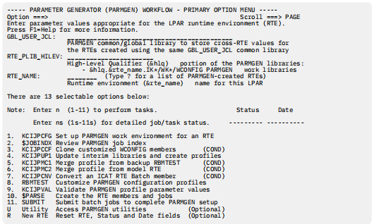
- . Enter the following parameter values for your environment:
GBL_USER_JCL
The name of a JCL library to be created for PARMGEN jobs, for example NETVIEW.V621RTE.JCL
RTE_PLIB_HILEV
The high-level qualifier for PARMGEN work libraries, for example NETVIEW.V621RTE.
RTE_NAME
The name of the runtime environment to be created, for example CNM01.
Option 1. KCIJPCFG Set up PARMGEN work environment for an RTE
- Select option 1 to display the Set Up PARMGEN Work Environment panel.
- Because the scenario creates a new runtime environment, the job statement to be used for PARMGEN jobs is the only item to fill in on the Set Up PARMGEN Work Environment panel. For example:
//USER1A JOB MSGLEVEL=1,MSGCLASS=A,NOTIFY=USER1
- If the GBL_USER_JCL library that you specified on the Parameter Generator (PARMGEN) Workflow panel does not exist, a message is displayed. Press Enter to allocate the JCL library and to return to the Set Up PARMGEN Work Environment panel. Press Enter to continue setting up the PARMGEN work environment.
- From the Set Up PARMGEN Work Environment panel (2 of 3), specify a value for the following fields:
- GBL_TARGET_HILEV: The high-level qualifier for your SMP/E target libraries, for example NETVIEW.V6R3M0
- GBL_SYSDA_UNIT: The disk unit name for non-VSAM data sets, for example SYSDA.
Press Enter.
- From the Set Up PARMGEN Work Environment panel (3 of 3), enter any values that are required by your installation for creating new data sets. Press Enter.
- The Display PARMGEN Environment Analysis panel lists the components that are installed in your TKANCUS data set. Press Enter to display the Include Products in the PARMGEN Customization panel.
- To include any products in PARMGEN customization, enter / or S to the left of the product code. By default, all products are preselected for customization. When you finish, specify Y in the confirm field and press Enter.
- Review and submit the KCIJPCFG job. Verify that the job ends with a 0 return code. If the job does not end with a 0 return code, correct the job and resubmit it.
- Press F3 to display messages for the submitted job.
- Press Enter to return to the Parameter Generator (PARMGEN) Workflow panel. Note the status and date on the right of the step that you just completed.
Option 2. $JOBINDX Review PARMGEN j
- From the Parameter Generator (PARMGEN) Workflow panel, select option 2 to display the PARMGEN job index.
- Review the information on this panel.
- Press F3.
Option 4. KCIJPUP1 Update interim libraries and create profiles
The PARMGEN tool uses sets of interim and working libraries to store configuration values. Interim
libraries are created and populated based on the products that you selected to configure and the values
that you specified when you set up the work environment.
- From the Parameter Generator (PARMGEN) Workflow panel, select option 4 to update the IK* interim staging libraries and to create profiles.
- Review and submit the KCIJPUP1 job. Verify that the job ends with a 0 return code. If the job does not end with a 0 return code, correct the job and resubmit it.
- Press F3 to display messages for the submitted job.
- Press Enter to return to the Parameter Generator (PARMGEN) Workflow panel.
Option 8. Customize PARMGEN configuration profiles
-
From the Parameter Generator (PARMGEN) Workflow panel, select option 8 to customize configuration profiles. Use this option to override or specify values for the NetView agent configuration files.
Most of the IBM Tivoli Monitoring and NetView agent parameters are set in the RTE LPAR profile. Use the global parameters selection to specify the location of key libraries on your system.
Use a TSO editor to customize the files. Some optional values are commented out. If you modify any of these values, make sure that you also uncomment the statements.
- Select option 1 to customize the RTE LPAR profile.
-
The CONFIGURE_PRODUCTS section shows the products that are included or excluded. Review the default settings and update them as necessary for your installation. Parameters beginning with KDS are for the monitoring server. The NetView agent uses parameters beginning with KNA.
Make sure that you review and update the following parameters:
-
Type of monitoring server (hub).
This is controlled by the KDS_TEMS_TYPE parameter. This is set to HUB.
For the NetView agent to connect to the monitoring server, make sure that the KNA_TEMS_LOCAL_CONNECT_FLAG parameter is set to Y and that the KNA_TEMS_TCP_HOST parameter is correct.
-
Communications-related information (for example TCP addresses).
Use a fully-qualified host name or TCPIP address. The addresses are assigned default values. Verify that the following monitoring server parameters are correct:
- RTE_TCP_HOST
- RTE_TCP_PORT_NUM
- RTE_TCP_STC
Verify that the following NetView agent parameters are correct:
- KNA_AGT_TCP_HOST
- KNA_TCP_STC
Verify that the following parameters that control the communications protocols used by the monitoring server and the NetView agent are correct:
- KDS_TEMS_COMM_PROTOCOLn, where n is a value 1-7
- KDS_AGT_COMM_PROTOCOLn, where n is a value 1-7
- KDS_TEMS_TCP_xxxxx_PORT_NUM where xxxxx corresponds to the communications protocol (PIPE,UDP,PIPE6,UDP6,PIPES,PIPE6S)
Make sure that the KDS_TEMS_KLX_TCP_TOLERATERECYCLE parameter and KNA_AGT_KLX_TCP_TOLERATERECYCLE parameter are set to Y. This enables the monitoring server and the NetView agent to reconnect to its TCP/IP stack without being recycled after the TCP/IP stack is recycled.
-
PPI sender and receiver names
The KNA_PPISND_PPI_SENDER_CNMEMATX and KNA_PPIRCV_PPI_RECEIVER_CNMEMARX parameters control the PPI sender and receiver names that are used by the NetView agent.
The sender name is controlled by the KNA_PPISND_PPI_SENDER_CNMEMATX parameter. The default name is CNMEMATX. There is no matching CNMSTYLE statement.
The receiver name is controlled by the KNA_PPIRCV_PPI_RECEIVER_CNMEMARX parameter. This name must match the DESTPPI receiver name that is specified in the CNMSTYLE member or its include member. The default value is CNMEMARX.
- Security settings to enable encryption for the monitoring server
- Security settings to enable Take Action command forwarding.
-
System commands issued from the Tivoli Enterprise Portal using Take Action commands or situations run without command authorization or an audit trail. You can use the NetView product to perform command authorization for these system commands and to provide an audit trail.
Command authorization for the Take Action system commands uses the portal user ID, which is sent to the NetView program with the command. The portal user ID that is sent is used to determine the user ID that issues the command. When a command is sent from a situation, the user ID that is sent is the last one that edited the situation. Password validation is not performed. If a NetView operator ID exists that matches the portal user ID and has the required command authorization, then the command is run on the existing NetView operator ID. For more information about protecting MVS system commands, refer to the IBM Z NetView Security Reference.
Some agents provide their own Take Action commands, known as agent commands. Agent commands have an associated two-character prefix for their product code. These commands are not sent to the NetView program for command authorization. The only agent commands that are sent to the NetView program for authorization are the NetView agent commands prefixed with NA. For information about creating or editing a Take Action command, refer to the IBM Tivoli Monitoring: Tivoli Enterprise Portal User's Guide.
-
You can display Take Action commands and command responses in the NetView Command Response workspace. Additionally, you can display the BNH806I and BNH807I audit trail messages in the NetView Audit Log workspace.
-
Use the following parameters to enable command authorization checking for system commands sent from the hub monitoring server:
-
KDS_PPI_RECEIVER
Specifies the name of the NetView PPI Receiver. The value must match the PPI receiver name specified on the NetView APSERV command. The default value is CNMPCMDR.
-
KDS_PPI_SENDER
Optional: Specify a value for the PPI sender. If you do not specify a value, the job name of the monitoring server is used when the command is written to the NetView log.
-
Equivalent parameters are available to enable command authorization checking for commands sent from the NetView agent:
-
KNA_AGT_KGLHC_PPI_RECEIVER
Specifies the name of the NetView PPI Receiver. The value must match the PPI receiver name specified on the NetView APSERV command. The default value is CNMPCMDR.
-
KNA_AGT_KGLHC_PPI_SENDER
Optional: Specify a value for the PPI sender.
-
For definitions for the common parameters, see the IBM Tivoli OMEGAMON XE and Tivoli Management Services on z/OS: Parameter Reference. For NetView agent definitions, see Appendix C, “Enterprise Management Agent Changes,” on page 73. For information about configuring security settings for a monitoring server running in a z/OS environment, see IBM Tivoli OMEGAMON XE and Tivoli Management Services: Configuring the Tivoli Enterprise Monitoring Server on z/OS.
-
Press F3 to return to the menu panel.
-
Select option 2 to review and specify global parameters. Review the default settings and update them as necessary for your installation.
Usage notes:
-
The global parameters define system data sets that include started task procedures, load modules, and configuration files. In many cases, the default high-level qualifier for the data set is SYS1. Review the global parameters starting with the GLBL_DSN_SYS1 parameter and verify that the correct data sets are defined.
-
The GBL_DSN_NETVIEW_CNMLINK parameter specifies the name of the NetView CNMLINK data set. The default is set to NETVIEW.VNRNMN.CNMLINK. This must be changed. Update the parameter to the correct name of the NetView CNMLINK data set.
-
Press F3 to return to the menu panel.
-
Select option 4 (WCONFIG). Locate the KNA$PENV member and edit it. Verify that it contains the following statements:
- CTIRA_RECONNECT_WAIT = 60
- CTIRA_HEARTBEAT = 1
For more information about the CTIRA_ environment variables, see the IBM Tivoli Monitoring: Installation and Setup Guide.
-
Press F3 again to return to the Parameter Generator (PARMGEN) Workflow panel.
Option 10. Create the RTE members and jobs
-
Prior to creating the runtime environment, the PARMGEN tool stores the specified configuration in a set of members in a working library. These members are used to create the configuration files in the runtime environment.
From the Parameter Generator (PARMGEN) Workflow panel, select option 10 to create the RTE members and jobs.
-
Select option 1 to edit the composite $PARSE job.
-
Review and submit the KCIJPPRS job. Verify that the job ends with a 0 return code. If the job does not end with a 0 return code, correct the job and resubmit it.
-
Press F3 to display messages for the submitted job.
-
Press Enter to return to the menu panel.
-
Press F3 to return to the Parameter Generator (PARMGEN) Workflow panel.
Option 11. Submit batch jobs to complete PARMGEN setup
-
From the Parameter Generator (PARMGEN) Workflow panel, select Option 4 to submit batch jobs to complete the PARMGEN setup.
The Submit Batch Jobs To Complete PARMGEN Setup panel (KCIP@SUB) is displayed.
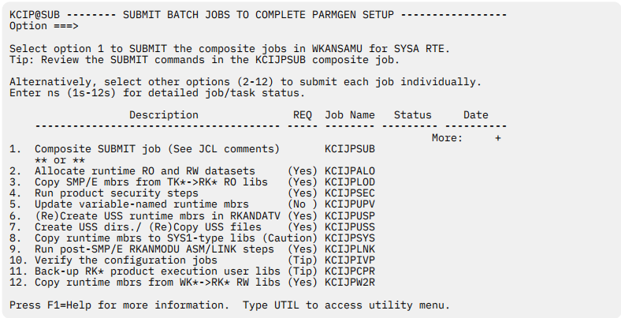
-
Choose one of the following approaches to submit jobs:
-
To submit some or all of the jobs needed for configuration in one step, select Option 1 to edit the KCIJPSUB composite master submit job.
-
To submit jobs separately, select other options 2-12 to submit each job individually based on your requirements.
-
Review and verify the jobs.
-
Ensure the jobs you want to submit are all selected.
The jobs that will be submitted are listed under directory ./ ADD NAME=SUBLIST in the KCIJPSUB job. The jobs that are commented out are not submitted. By default, the KCIJVSYS job and the KCIJPIVP job are not selected.
-
Verify whether the jobs end with the right return code.
Verify that the jobs end with a 0 return code. If the KCIJPIVP job is selected, it might end with a 4 return code, because the composite master job did not run all the jobs.
-
If a job does not end with the expected return code, correct the individual job and resubmit it.
-
Press F3 to display messages for the submitted job.
-
To submit additional jobs, choose one of the following steps to complete based on your situation:
- If you use the composite job, submit any additional jobs that are included in the KCIJPSUB job.
- If you don't use the composite job, submit any needed individual job from the Submit Batch Jobs To Complete PARMGEN Setup panel.
- Complete the following steps to submit the KCIJPUSS, KCIJPSYS, KCIJPIVP, and KCIJPW2R jobs separately:
- Select Option 7 to edit the USS system setup job.
- Review and submit the KCIJPUSS job. Verify that the job ends with a 0 return code. If the job does not end with a 0 return code, correct the job and resubmit it.
- Press F3 to display messages for the submitted job.
- Press Enter to return to the menu panel.
- Select Option 8 to edit the system setup job.
- Review and submit the KCIJPSYS job. Verify that the job ends with a 0 return code. If the job does not end with a 0 return code, correct the job and resubmit it.
- Press F3 to display messages for the submitted job.
- Press Enter to return to the menu panel.
- Select Option 10 to edit the configuration verification job.
- Review and submit the KCIJPIVP job. Verify that the job ends with a 0 or 4 return code. If the job does not end with a 0 or 4 return code, correct the job and resubmit it. If the job ends with a 4 return code, examine the job output for the reason.
- Press F3 to display messages for the submitted job.
- Press Enter to return to the menu panel.
- Select Option 12 to edit the WK* to RK* deployment job.
- Review and submit the KCIJPW2R job. Verify that the job ends with a 0 or 4 return code. If the job does not end with a 0 or 4 return code, correct the job and resubmit it. If the job ends with a 4 return code, examine the job output for the reason.
- Press F3 to display messages for the submitted job.
- Press Enter to return to the menu panel.
- Press F3 to return to the Parameter Generator (PARMGEN) Workflow panel.
- Press F3 twice to exit the PARMGEN tool.
When you complete the procedure in this section, continue with Chapter 3, “Completing the NetView
agent configuration,” on page 27.
Scenario 2: Updating the NetView agent in an existing RTE6
In this scenario, there is an existing full runtime environment (RTE) that was created using the PARMGEN
configuration tool. The existing environment has a hub Tivoli Enterprise Monitoring Server on a different
host and a working Tivoli Enterprise Portal Server. This RTE contains a remote Tivoli Enterprise Monitoring
Server into which the NetView agent connects.
Follow these steps to configure a NetView agent into the existing RTE using the PARMGEN configuration
method.
- Create the batch parameter deck using the configuration tool.
- Access and start the PARMGEN tool.
- Set up the PARMGEN work environment for an RTE.
- Review the PARMGEN job index.
- Update the interim libraries and create profiles.
- Convert a configuration tool RTE batch member.
- Customize the PARMGEN configuration profiles.
- Validate the PARMGEN profile parameter values.
- Create the RTE members and jobs.
- Submit batch jobs to complete the PARMGEN setup.
Create the batch parameter deck using the configuration tool
Follow these steps to use the configuration tool to create a batch parameter deck that you will use to
configure the NetView agent.
- Log on to a TSO session.
- Enter ISPF.
- From the Primary Option Menu, enter option 6 (Command).
- Start the configuration tool. For example, from the command line enter the following command: EX '&shilev.INSTLIB' where &shilev is the high-level qualifier that you specified when you created the INSTLIB data set. The configuration tool Main Menu ID is displayed.
- From the configuration tool Main Menu, enter 3. The Configure Products panel is displayed.
- Enter 1 to display the Product Selection menu.
- Enter S to select the NetView agent.
- Enter Z to select the RTE to be used as the source of the batch parameter deck.
- Enter 1 to display the Create/Clone Parameter Deck panel.
- Enter 1 to display the Create Batch Mode Parameters panel.
- From the Create Batch Mode Parameters panel, specify a value for the following fields and then press Enter:
- Parameter Library: The data set where the parameter deck will be located.
- Member Name: The member name into which the parameter deck is written.
- Press F3 repeatedly until you exit the configuration tool.
Start the PARMGEN tool
- Log on to a TSO session.
- Enter ISPF.
- From the Primary Option Menu, enter option 6 (Command).
- If you are using a 3270 Model 2 (24 x 80) display, turn off the predefined function (PF) keys so that the function keys are not truncated. To do this, enter PFSHOW on the command line and repeat this command until the ISPF default function keys are no longer displayed.
- From the command line, enter the following command: EX '&shilev.TKANCUS' where &shilev is the high-level qualifier that you specified when you installed Tivoli Management Services. A panel similar to Figure 15 on page 89 is displayed.
- Review the checklists by selecting option 1.
- You can skip option 2. You already completed this step when you installed Tivoli Management Services.
- Select Option 4 to use the PARMGEN Standard configuration mode.
Note: The Standard configuration mode is automatically hidden on the KCIPQPGW panel. PARMGEN has two types of installation modes: Quick configuration and Standard configuration. This scenario documents the Standard configuration mode. Please see Chapter 2, “Configuring the NetView agent by using the PARMGEN quick configuration method,” on page 7 and IBM OMEGAMON shared publications for information about the Quick configuration method. A panel similar to Figure 14 on page 82 is displayed.
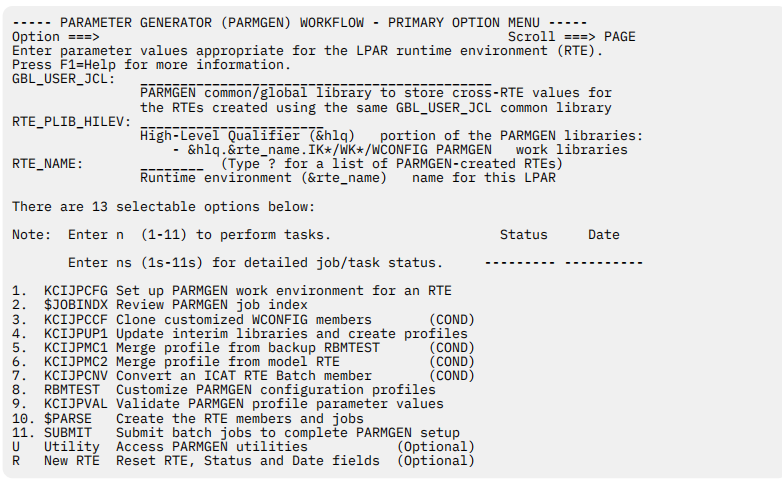
- 9. Enter the following parameter values for your environment:
GBL_USER_JCL
The name of the JCL library to be created for PARMGEN jobs, for example
NETVIEW.V621RTE.JCL
RTE_PLIB_HILEV
The high-level qualifier for the PARMGEN work libraries, for example NETVIEW.V621RTE.
RTE_NAME
The name of the runtime environment to be created, for example CNM01.
Option 1. KCIJPCFG Set up PARMGEN work environment for an RTE
- Select option 1 to display the Set Up PARMGEN Work Environment panel.
- From the Set Up PARMGEN Work Environment panel, enter the location of the batch parameter deck and enter a job statement to be used for PARMGEN jobs, for example:
//USER1A JOB MSGLEVEL=1,MSGCLASS=A,NOTIFY=USER1
- If the GBL_USER_JCL library that you specified on the Parameter Generator (PARMGEN) Workflow panel does not exist, a message is displayed. Press Enter to allocate the JCL library and return to the Set Up PARMGEN Work Environment panel. Press Enter to continue setting up the PARMGEN work environment.
- From the Set Up PARMGEN Work Environment panel (2 of 3), specify a value for the following fields:
- GBL_INST_HILEV: The high-level qualifier for your configuration tool INSTLIB data set
- GBL_TARGET_HILEV: The high-level qualifier for your SMP/E target libraries, for example NETVIEW.V6R3M0
- GBL_SYSDA_UNIT: The disk unit name for non-VSAM data sets, for example SYSDA
Press Enter.
- From the Set Up PARMGEN Work Environment panel (3 of 3), enter any values that are required by your installation for creating new data sets. Press Enter.
- The Display PARMGEN Environment Analysis panel lists the components that are installed in your TKANCUS data set. Press Enter to display the Include Products in PARMGEN Customization panel.
- To include products in PARMGEN customization, enter / or S to the left of the product code. By default, all products are preselected for customization. When you finish, specify Y in the confirm field and press Enter.
- Review and submit the KCIJPCFG job. Verify that the job ends with a 0 return code. If the job does not end with a 0 return code, correct the job and resubmit it.
- Press F3 to display messages for the submitted job.
- Press Enter to return to the Parameter Generator (PARMGEN) Workflow panel. Note the status and date on the right of the step that you just completed.
Option 2. $JOBINDX Review PARMGEN job index
- From the Parameter Generator (PARMGEN) Workflow panel, select option 2 to display the PARMGEN job index.
- Review the information on this panel.
- Press F3.
Option 4. KCIJPUP1 Update interim libraries and create profiles
- From the Parameter Generator (PARMGEN) Workflow panel, select option 4 to update interim libraries and create profiles.
- Review and submit the KCIJPUP1 job. Verify that the job ends with a 0 return code. If the job does not end with a 0 return code, correct the job and resubmit it.
- Press F3 to display messages for the submitted job.
- Press Enter to return to the Parameter Generator (PARMGEN) Workflow panel.
Option 7. KCIJPCNV Convert an ICAT RTE batch member
- From the Parameter Generator (PARMGEN) Workflow panel, select option 7 to convert an RTE batch member that was created with the configuration tool.
- Review and submit the KCIJPCNV job. Verify that the job ends with a 0 return code. If the job does not end with a 0 return code, correct the job and resubmit it.
- Press F3 to display messages for the submitted job.
- Press Enter to return to the Parameter Generator (PARMGEN) Workflow panel.
Option 8. Customize PARMGEN configuration profiles
- From the Parameter Generator (PARMGEN) Workflow panel, select option 8 to customize configuration profiles.
- Select option 1 to customize the RTE LPAR profile.
- The CONFIGURE_PRODUCTS section shows the products that are included or excluded. Review the default settings and update them as necessary for your installation.
- Type of monitoring server (hub or remote)
- Communications-related information (for example TCP addresses)
- PPI sender and receiver names
- Security settings to enable encryption for the monitoring server
- Security settings to enable take action command forwarding
- Press F3 to return to the menu panel.
- Select option 2 to review and specify global parameters. Review the default settings and update them as necessary for your installation.
- Press F3 to return to the menu panel.
- Press F3 again to return to Parameter Generator (PARMGEN) Workflow panel.
Option 10. Create the RTE members and jobs
- From the Parameter Generator (PARMGEN) Workflow panel, select option 10 to create the RTE members and jobs.
- Select option 1 to edit the composite $PARSE job.
- Review and submit the KCIJPPRS job. Verify that the job ends with a 0 return code.
- If the job does not end with a 0 return code, correct the job and resubmit it.
- Press F3 to display messages for the submitted job.
- Press Enter to return to the menu panel.
- Press F3 to return to the Parameter Generator (PARMGEN) Workflow panel.
Option 11. Submit batch jobs to complete PARMGEN setup
- From the Parameter Generator (PARMGEN) Workflow panel, select Option 4 to submit batch jobs to complete the PARMGEN setup. The Submit Batch Jobs To Complete PARMGEN Setup panel (KCIP@SUB) is displayed.
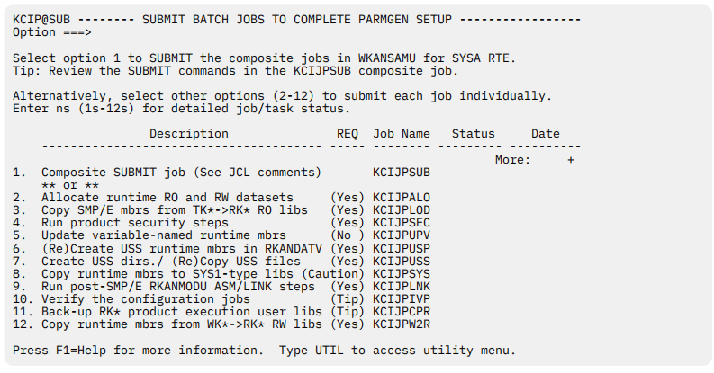
- Choose one of the following approaches to submit jobs:
- To submit some or all of the jobs needed for configuration in one step, select Option 1 to edit the KCIJPSUB composite master submit job.
- To submit jobs separately, select other options 2-12 to submit each job individually based on your requirements.
- Review and verify the jobs.
- Ensure the jobs you want to submit are all selected. The jobs that will be submitted are listed under directory ./ ADD NAME=SUBLIST in the KCIJPSUB job. The jobs that are commented out are not submitted. By default, the KCIJVSYS job and the KCIJPIVP job are not selected.
- Verify whether the jobs end with the right return code. Verify that the jobs end with a 0 return code. If the KCIJPIVP job is selected, it might end with a 4 return code, because the composite master job did not run all the jobs.
- If a job does not end with the expected return code, correct the individual job and resubmit it.
- Press F3 to display messages for the submitted job.
- To submit additional jobs, choose one of the following steps to complete based on your situation:
- If you use the composite job, submit any additional jobs that are included in the KCIJPSUB job.
- If you don't use the composite job, submit any needed individual job from the Submit Batch Jobs To Complete PARMGEN Setup panel.
- Complete the following steps to submit the KCIJPUSS, KCIJPSYS, KCIJPIVP, and KCIJPW2R jobs separately:
- Select Option 7 to edit the USS system setup job.
- Review and submit the KCIJPUSS job. Verify that the job ends with a 0 return code. If the job does not end with a 0 return code, correct the job and resubmit it.
- Press F3 to display messages for the submitted job.
- Press Enter to return to the menu panel.
- Select Option 8 to edit the system setup job.
- Review and submit the KCIJPSYS job. Verify that the job ends with a 0 return code. If the job does not end with a 0 return code, correct the job and resubmit it.
- Press F3 to display messages for the submitted job.
- Press Enter to return to the menu panel.
- Select Option 10 to edit the configuration verification job.
- Review and submit the KCIJPIVP job. Verify that the job ends with a 0 or 4 return code. If the job does not end with a 0 or 4 return code, correct the job and resubmit it. If the job ends with a 4 return code, examine the job output for the reason.
- Press F3 to display messages for the submitted job.
- Press Enter to return to the menu panel.
- Select Option 12 to edit the WK* to RK* deployment job.
- Review and submit the KCIJPW2R job. Verify that the job ends with a 0 or 4 return code. If the job does not end with a 0 or 4 return code, correct the job and resubmit it. If the job ends with a 4 return code, examine the job output for the reason.
- Press F3 to display messages for the submitted job.
- Press Enter to return to the menu panel.
- Press F3 to return to the Parameter Generator (PARMGEN) Workflow panel.
- Press F3 twice to exit the PARMGEN tool.
Notices
This information was developed for products and services offered in the U.S.A.
IBM may not offer the products, services, or features discussed in this document in other countries.
Consult your local IBM representative for information on the products and services currently available in
your area. Any reference to an IBM product, program, or service is not intended to state or imply that only
that IBM product, program, or service may be used. Any functionally equivalent product, program, or
service that does not infringe any IBM intellectual property right may be used instead. However, it is the
user's responsibility to evaluate and verify the operation of any non-IBM product, program, or service.
IBM may have patents or pending patent applications covering subject matter described in this
document. The furnishing of this document does not give you any license to these patents. You can send
license inquiries, in writing, to:
IBM Director of Licensing
IBM Corporation
North Castle Drive
Armonk, NY 10504-1785
U.S.A.
For license inquiries regarding double-byte (DBCS) information, contact the IBM Intellectual Property
Department in your country or send inquiries, in writing, to:
Intellectual Property Licensing
Legal and Intellectual Property Law
IBM Japan, Ltd.
19-21, Nihonbashi-Hakozakicho, Chuo-ku
Tokyo 103-8510, Japan
The following paragraph does not apply to the United Kingdom or any other country where such
provisions are inconsistent with local law:
INTERNATIONAL BUSINESS MACHINES CORPORATION PROVIDES THIS PUBLICATION "AS IS"
WITHOUT WARRANTY OF ANY KIND, EITHER EXPRESS OR IMPLIED, INCLUDING, BUT NOT LIMITED TO,
THE IMPLIED WARRANTIES OF NON-INFRINGEMENT, MERCHANTABILITY OR FITNESS FOR A
PARTICULAR PURPOSE.
Some states do not allow disclaimer of express or implied warranties in certain transactions, therefore,
this statement might not apply to you.
This information could include technical inaccuracies or typographical errors. Changes are periodically
made to the information herein; these changes will be incorporated in new editions of the publication.
IBM may make improvements and/or changes in the product(s) and/or the program(s) described in this
publication at any time without notice.
Any references in this information to non-IBM Web sites are provided for convenience only and do not in
any manner serve as an endorsement of those Web sites. The materials at those Web sites are not part of
the materials for this IBM product and use of those Web sites is at your own risk.
IBM may use or distribute any of the information you supply in any way it believes appropriate without
incurring any obligation to you.
Licensees of this program who wish to have information about it for the purpose of enabling: (i) the
exchange of information between independently created programs and other programs (including this
one) and (ii) the mutual use of the information which has been exchanged, should contact:
IBM Corporation
2Z4A/101
11400 Burnet Road
Austin, TX 78758
U.S.A.
Such information may be available, subject to appropriate terms and conditions, including in some cases
payment of a fee.
The licensed program described in this document and all licensed material available for it are provided by
IBM under terms of the IBM Customer Agreement, IBM International Program License Agreement or any
equivalent agreement between us.
Information concerning non-IBM products was obtained from the suppliers of those products, their
published announcements or other publicly available sources. IBM has not tested those products and
cannot confirm the accuracy of performance, compatibility or any other claims related to non-IBM
products. Questions on the capabilities of non-IBM products should be addressed to the suppliers of
those products.
Programming Interfaces
This publication documents information that is NOT intended to be used as Programming Interfaces of
IBM Z NetView.
Trademarks
IBM, the IBM logo, and ibm.com® are trademarks or registered trademarks of International Business
Machines Corp., registered in many jurisdictions worldwide. Other product and service names might be
trademarks of IBM or other companies. A current list of IBM trademarks is available on the Web at
"Copyright and trademark information" at http://www.ibm.com/legal/copytrade.shtml .
Adobe and Acrobat and all Adobe-based trademarks are either registered trademarks or trademarks of
Adobe Systems Incorporated in the United States, other countries, or both.
Linux is a trademark of Linus Torvalds in the United States, other countries, or both.
Microsoft and Windows are trademarks of Microsoft Corporation in the United States, other countries, or
both.
UNIX is a registered trademark of The Open Group in the United States and other countries.
Other product and service names might be trademarks of IBM or other companies.
Privacy policy considerations
IBM Software products, including software as a service solutions, (“Software Offerings”) may use cookies
or other technologies to collect product usage information, to help improve the end user experience, to
tailor interactions with the end user or for other purposes. In many cases no personally identifiable
information is collected by the Software Offerings. Some of our Software Offerings can help enable you to
collect personally identifiable information. If this Software Offering uses cookies to collect personally
identifiable information, specific information about this offering’s use of cookies is set forth below.
This Software Offering does not use cookies or other technologies to collect personally identifiable
information.
If the configurations deployed for this Software Offering provide you as customer the ability to collect
personally identifiable information from end users via cookies and other technologies, you should seek
your own legal advice about any laws applicable to such data collection, including any requirements for
notice and consent.
For more information about the use of various technologies, including cookies, for these purposes, See
IBM’s Privacy Policy at http://www.ibm.com/privacy and IBM’s Online Privacy Statement at http://
www.ibm.com/privacy/details the section entitled “Cookies, Web Beacons and Other Technologies” and the “IBM Software Products and Software-as-a-Service Privacy Statement” at http://www.ibm.com/
software/info/product-privacy.
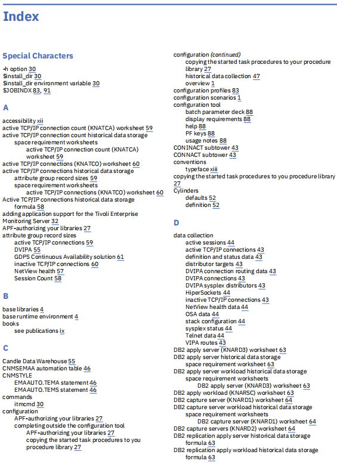
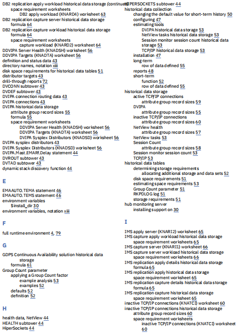